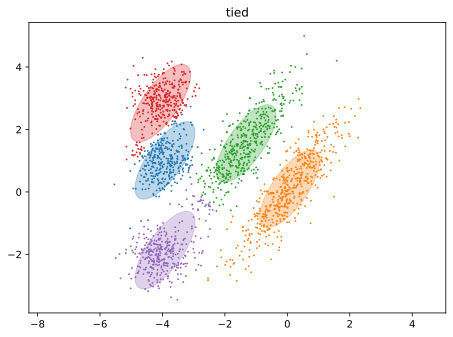
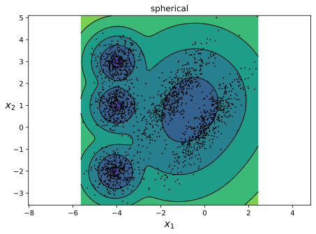
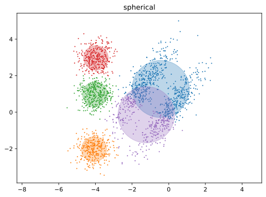
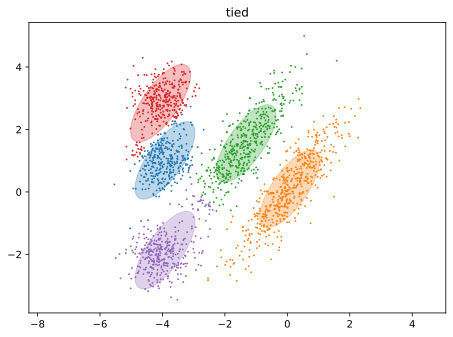
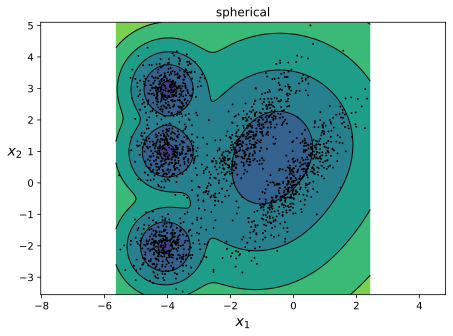
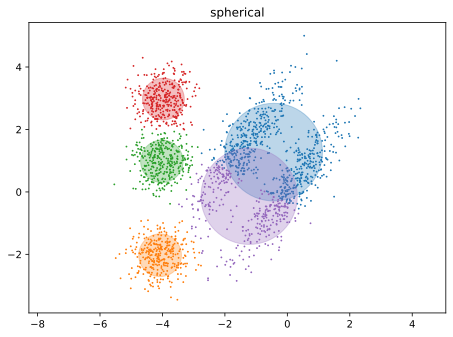
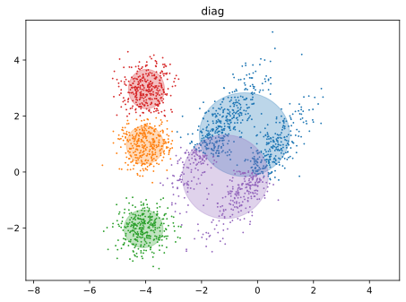
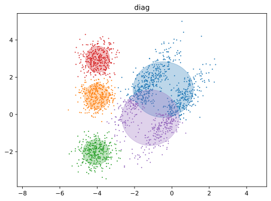

Concept#
Gaussian Mixture Models are a statistical technique used for approximating the probability distribution of data, known as density estimation.
From the introduction in the previous section, one might ask the motivation of using a linear combination to approximate a probability distribution. The answer is that the linear combination of simple distributions is a flexible model that can approximate a wide variety of probability distributions.
Consider your dataset that exhibits a multimodal distribution (i.e. multiple modes), then a single Gaussian distribution will not be able to capture the distribution of the data.
Intuition#
Simple Bi-Modal Distribution#
The code below does the following:
x_axisis created as a NumPy array of evenly spaced values ranging from -15 to 15 with a step size of 0.001.gaussian_1andgaussian_2are defined as dictionaries representing two normal distributions with given means and standard deviations:Distribution 1 has a mean of -4 and a standard deviation of 2.
Distribution 2 has a mean of 4 and a standard deviation of 2.
The probability density functions (PDFs) for
gaussian_1andgaussian_2are calculated using thenorm.pdffunction from the SciPy library. The PDFs are computed for each value inx_axis, with the respective mean and standard deviation for each distribution.The
pdf_mergedvariable is created by adding the PDFs ofgaussian_1andgaussian_2element-wise, which represents the combined probability density function of both distributions.
Show code cell source
1def get_gaussian_pdf(x: np.ndarray, mu: float, sigma: float) -> np.ndarray:
2 y = norm.pdf(x, mu, sigma)
3 return y
4
5
6def merge_gaussian_pdf(
7 prior: List[float], pdf_1: np.ndarray, pdf_2: np.ndarray, *args: np.ndarray
8) -> np.ndarray:
9 pdfs = [pdf_1, pdf_2, *args]
10
11 assert len(prior) == len(pdfs)
12
13 # w1 * f1 + w2 * f2 + ...
14 return np.sum([prior[i] * pdfs[i] for i in range(len(prior))], axis=0)
Show code cell source
1x_axis = np.arange(-15, 15, 0.001)
2gaussian_1 = {"mean": -4, "std": 2}
3gaussian_2 = {"mean": 4, "std": 2}
4
5pdf_1 = get_gaussian_pdf(x_axis, gaussian_1["mean"], gaussian_1["std"])
6pdf_2 = get_gaussian_pdf(x_axis, gaussian_2["mean"], gaussian_2["std"])
7
8weights_1, weights_2 = 0.5, 0.5
9
10pdf_merged = merge_gaussian_pdf(
11 [weights_1, weights_2], pdf_1, pdf_2
12) # weights_1 * pdf_1 + weights_2 * pdf_2
This code below will create a figure with three subplots, where the first subplot (ax1) contains Distribution 1 and Distribution 2, the second subplot (ax2) contains the Merged Distribution, and the third subplot (ax3) contains Distribution 1 and Distribution 2 as dotted lines and the Merged Distribution as a solid line. All subplots share the same x-axis.
Show code cell source
1# Create a 3x1 grid of subplots with shared x-axis
2fig, (ax1, ax2, ax3) = plt.subplots(nrows=3, ncols=1, figsize=(12, 10), sharex=True)
3
4# Plot Distribution 1 and Distribution 2 on the first subplot (ax1)
5ax1.plot(x_axis, pdf_1, "r:", label="Gaussian 1")
6ax1.plot(x_axis, pdf_2, "b:", label="Gaussian 2")
7ax1.legend()
8
9# Plot Merged Distribution on the second subplot (ax2)
10ax2.plot(x_axis, pdf_merged, "g-", label="Gaussian Merged")
11ax2.legend()
12
13# Plot pdf_1 and pdf_2 as dotted lines, and pdf_merged as solid line on the third subplot (ax3)
14ax3.plot(x_axis, pdf_1, "r:", label="Gaussian 1 (Dotted)")
15ax3.plot(x_axis, pdf_2, "b:", label="Gaussian 2 (Dotted)")
16ax3.plot(x_axis, pdf_merged, "g-", label="Gaussian Merged (Solid)")
17ax3.legend()
18
19# Show the plots
20plt.show();
In this case, we say that
where this distribution is a mixture of two normal distributions with equal weights of 0.5.
The mixture components are:
parametrized by
The mixture weights are:
Generative Story#
Now the generative story of such a mixture model is as follows.
If we have a mixture model with \(K\) components, then we can sample from the mixture model by first sampling a component \(k\) from the categorical distribution with parameters \(\boldsymbol{\pi}\), and then sampling from the \(k\)-th component distribution with parameters \(\boldsymbol{\mu}_k\) and \(\boldsymbol{\Sigma}_k\).
More concretely, if we know the following parameters:
\(\boldsymbol{\pi} = \begin{bmatrix} \pi_1 & \pi_2 \end{bmatrix} = \begin{bmatrix} 0.5 & 0.5 \end{bmatrix}\)
\(\boldsymbol{\mu} = \begin{bmatrix} \mu_1 & \mu_2 \end{bmatrix} = \begin{bmatrix} 2 & -2 \end{bmatrix}\)
\(\boldsymbol{\Sigma} = \begin{bmatrix} \Sigma_1 & \Sigma_2 \end{bmatrix} = \begin{bmatrix} 3 & 1 \end{bmatrix}\)
then we can sample from the mixture model by
first sampling a component \(k\) from the categorical distribution with parameters \(\boldsymbol{\pi}\), which means either \(k = 1\) or \(k = 2\) with equal probability of 0.5.
then once we know which component we sampled from, we can sample from the component distribution, which in this case is a normal distribution with mean \(\mu_k\) and standard deviation \(\Sigma_k\). For example, if we sampled \(k = 1\), then we can sample from the first component distribution with mean \(\mu_1 = 2\) and standard deviation \(\Sigma_1 = 3\).
Note very carefully, this is the “generative” side, in machine learning we are interested in the “inference” side, which is to infer the parameters of the mixture model from the dataset \(\mathcal{S}\)!
Let’s see in code how we can sample from a mixture model, and that if we sample enough data points, the empirical distribution of the samples will converge to the true distribution of the mixture model.
Show code cell source
1def generate_x(
2 prior: List[float],
3 mu: List[float],
4 sigma: List[float],
5 num_samples: int = 100,
6 num_gaussians: int = 2,
7) -> List[float]:
8 X = []
9 for _ in range(num_samples):
10 # Select a Gaussian based on the prior
11 selected_gaussian = np.random.choice(num_gaussians, p=prior)
12 # Sample from the selected Gaussian
13 x = norm.rvs(
14 loc=mu[selected_gaussian], scale=sigma[selected_gaussian], size=None
15 )
16 X.append(x)
17 return X
Show code cell source
1x_axis = np.arange(-5, 15, 0.001)
2prior = [0.4, 0.4, 0.2] # weights
3mu = [0, 5, 10]
4sigma = [1, 1, 1]
5
6gaussian_1 = norm.pdf(x_axis, loc=mu[0], scale=sigma[0])
7gaussian_2 = norm.pdf(x_axis, loc=mu[1], scale=sigma[1])
8gaussian_3 = norm.pdf(x_axis, loc=mu[2], scale=sigma[2])
9
10mixture_pdf = merge_gaussian_pdf(
11 prior, gaussian_1, gaussian_2, gaussian_3
12) # prior[0] * gaussian_1 + prior[1] * gaussian_2 + prior[2] * gaussian_3
Show code cell source
1sample_sizes = [100, 500, 10000]
2
3fig, axes = plt.subplots(nrows=2, ncols=2, figsize=(12, 10), sharex=True, sharey=True)
4axes = axes.ravel()
5
6axes[0].plot(x_axis, mixture_pdf, label="Mixture PDF")
7axes[0].set_title("Mixture PDF")
8
9for i, n in enumerate(sample_sizes, start=1):
10 samples = generate_x(prior, mu, sigma, num_samples=n, num_gaussians=len(prior))
11 axes[i].hist(samples, bins=30, density=True, alpha=0.5, label=f"n = {n}")
12 axes[i].plot(x_axis, mixture_pdf, label="Mixture PDF")
13 axes[i].set_title(f"Generated Samples (n = {n})")
14
15for ax in axes:
16 ax.set_xlabel("X-axis")
17 ax.set_ylabel("Density")
18 ax.legend()
19
20plt.tight_layout()
21plt.show()
In this code, we’re using a Gaussian Mixture Model (GMM) to generate and visualize samples from a mixture of two Gaussian distributions. The purpose of the visualization is to demonstrate how the GMM can approximate the true underlying distribution as the number of samples increases.
Here’s a step-by-step explanation of the code:
We define sample_sizes as a list containing the number of samples to generate for each subplot (100, 500, and 10000).
We create a 2x2 grid of subplots with shared x and y axes, with a figure size of 12x10.
We plot the mixture PDF on the first subplot (axes[0]). This represents the true underlying distribution that we are trying to approximate with our GMM.
We iterate over the sample_sizes list, and for each sample size, we use the generate_x function to generate samples from the GMM. The generate_x function takes the prior probabilities, the means and standard deviations of the Gaussians, the number of samples, and the number of Gaussians as input arguments.
For each sample size, we plot a histogram of the generated samples on the corresponding subplot. We normalize the histogram to match the density of the true underlying distribution. We also plot the mixture PDF on the same subplot to compare the generated samples with the true distribution.
We set the titles, x-axis labels, and y-axis labels for all subplots, and add a legend to each subplot.
We use plt.tight_layout() to adjust the spacing between subplots, and finally display the figure using plt.show().
In the context of GMM, this code demonstrates how the GMM can be used to generate samples from a mixture of Gaussian distributions. The generated samples are visualized as histograms, which are compared to the true underlying distribution (the mixture PDF) to show how well the GMM approximates the true distribution. As the number of samples increases, the histograms of the generated samples become closer to the mixture PDF, indicating that the GMM is effectively approximating the true distribution.
Note carefully again that this is under the assumption that we already know the parameters of the mixture model, which is not the case in machine learning. In machine learning, we are interested in the “inference” side, which is to infer the parameters of the mixture model from the dataset \(\mathcal{S}\)!
Inference Story#
Now let’s flip the table and see how we can infer the parameters of the mixture model from the dataset \(\mathcal{S}\).
The code above does the following:
Import necessary libraries: NumPy, Matplotlib, and GaussianMixture from scikit-learn.
Generate a synthetic dataset with three clusters:
Set a random seed to ensure reproducibility.
Define the number of samples (500).
Create a dataset by concatenating samples from three normal distributions with different means (0, 5, and 10) and the same standard deviation (1). The dataset is reshaped into a 2D array.
Fit a Gaussian Mixture Model (GMM) to the data:
Instantiate a GaussianMixture object with three components and a fixed random state.
Fit the GMM to the dataset
X.
Plot the data and the Gaussian Mixture Model:
Create an array
x_plotof 1000 linearly spaced values between -5 and 15.Calculate the density of the GMM for each value in
x_plotusing thescore_samplesmethod.Plot a histogram of the dataset with 30 bins, normalized by the total area.
Plot the GMM density estimation using a red line.
Add labels for the x-axis, y-axis, and a title for the plot.
Display the plot using
plt.show().
A reminder, we know the true distribution because we defined them ourselves. In reality, we don’t know the true distribution, and we want to infer the parameters of the mixture model from the dataset \(\mathcal{S}\). The purpose of defining the true distribution is for pedagogical purposes, so that we can compare the true distribution with the estimated distribution from the GMM.
Show code cell source
1x_axis = np.arange(-5, 15, 0.001)
2prior = [0.4, 0.4, 0.2] # weights
3mu = [0, 5, 10]
4sigma = [1, 1, 1]
5
6gaussian_1 = norm.pdf(x_axis, loc=mu[0], scale=sigma[0])
7gaussian_2 = norm.pdf(x_axis, loc=mu[1], scale=sigma[1])
8gaussian_3 = norm.pdf(x_axis, loc=mu[2], scale=sigma[2])
9
10mixture_pdf = merge_gaussian_pdf(
11 prior, gaussian_1, gaussian_2, gaussian_3
12) # prior[0] * gaussian_1 + prior[1] * gaussian_2 + prior[2] * gaussian_3
Show code cell source
1num_samples = 10000
2samples = generate_x(
3 prior, mu, sigma, num_samples=num_samples, num_gaussians=len(prior)
4)
5X = np.array(samples).reshape(-1, 1)
6
7# Fit a Gaussian Mixture Model to the generated samples
8gmm = GaussianMixture(n_components=len(prior), random_state=1992)
9gmm.fit(X)
GaussianMixture(n_components=3, random_state=1992)In a Jupyter environment, please rerun this cell to show the HTML representation or trust the notebook.
On GitHub, the HTML representation is unable to render, please try loading this page with nbviewer.org.
GaussianMixture(n_components=3, random_state=1992)
Remarkable! The parameters inferred from our GMM model has the following:
Show code cell source
1print("Prior:", gmm.weights_)
2print("Mean:", gmm.means_.ravel())
3print("Std:", np.sqrt(gmm.covariances_.ravel()))
Prior: [0.39785786 0.20201207 0.40013007]
Mean: [-0.01573031 10.02728274 5.02481475]
Std: [1.01680719 0.97835049 0.99226471]
When rounded to the nearest integer/decimal, the parameters inferred from our GMM model has the following:
\(\boldsymbol{\pi} = \begin{bmatrix} \pi_1 & \pi_2 & \pi_3 \end{bmatrix} = \begin{bmatrix} 0.398, 0.4, 0.202 \end{bmatrix}\)
\(\boldsymbol{\mu} = \begin{bmatrix} \mu_1 & \mu_2 & \mu_3 \end{bmatrix} = \begin{bmatrix} 0.0, 5.0, 10.0 \end{bmatrix}\)
\(\boldsymbol{\Sigma} = \begin{bmatrix} \Sigma_1 & \Sigma_2 & \Sigma_3 \end{bmatrix} = \begin{bmatrix} 1.02, 0.99, 0.98 \end{bmatrix}\)
Almost spot on with the true parameters!!!
The plot shows promising results, which is not surprising since our estimated parameters are very close to the true parameters.
Show code cell source
1# Plot the data and the Gaussian Mixture Model
2x_plot = np.linspace(-5, 15, 1000).reshape(-1, 1)
3density = np.exp(
4 gmm.score_samples(x_plot)
5) # !!! gmm.score_samples(x_plot) returns the log-likelihood of the samples thus we need to take the exponential to get back raw probabilities.
6
7plt.hist(samples, bins=30, density=True, alpha=0.5, label="Generated Samples")
8plt.plot(x_plot, density, "-r", label="GMM Approximation")
9plt.plot(x_axis, mixture_pdf, "-g", label="True Mixture PDF")
10plt.xlabel("x")
11plt.ylabel("density")
12plt.title("Gaussian Mixture Model Approximation of Generated Samples")
13plt.legend()
14plt.show()
When you predict on the samples X, you get the cluster/component in which
each sample belongs to. In this case, the samples are generated from three
clusters, so the predicted labels are either 0, 1, or 2.
When you predict_proba on the samples X, you get the (log) probability
of each sample belonging to each cluster/component. In this case, the samples
are generated from three clusters, so the predicted probabilities are a 2D array
with shape (n_samples, n_components).
Then the highest probability is the cluster/component in which the sample belongs to, which is the predicted label.
Show code cell source
1gmm.predict(X), gmm.predict_proba(X)
(array([2, 2, 2, ..., 1, 2, 2]),
array([[1.26320804e-03, 2.57233727e-09, 9.98736789e-01],
[6.13952593e-06, 7.67030705e-07, 9.99993093e-01],
[3.20714893e-07, 1.82204807e-05, 9.99981459e-01],
...,
[1.19404179e-15, 9.92155660e-01, 7.84434023e-03],
[3.76091554e-07, 1.53545161e-05, 9.99984269e-01],
[1.08080724e-08, 6.99100159e-04, 9.99300889e-01]]))
Inference with 2D Data#
We can also visualize the inferred parameters of the mixture model in 2D.
Show code cell source
1# Generate a synthetic dataset with three clusters
2np.random.seed(42)
3n_samples = 500
4X1 = np.random.multivariate_normal([0, 0], [[1, 0], [0, 1]], int(0.4 * n_samples))
5X2 = np.random.multivariate_normal([5, 5], [[1, 0], [0, 1]], int(0.4 * n_samples))
6X3 = np.random.multivariate_normal([10, 10], [[1, 0], [0, 1]], int(0.2 * n_samples))
7X = np.vstack([X1, X2, X3])
8print(X.shape)
(500, 2)
Show code cell source
1# Fit a Gaussian Mixture Model to the data
2gmm = GaussianMixture(n_components=3, random_state=42)
3gmm.fit(X)
4
5print("Prior:")
6pprint(gmm.weights_)
7
8print("Mean:")
9pprint(gmm.means_)
10
11print("Covariance:")
12pprint(gmm.covariances_)
Prior:
array([0.40019011, 0.19999749, 0.3998124 ])
Mean:
array([[4.93719589e+00, 4.98357806e+00], │ [1.01268460e+01, 1.01296468e+01], │ [6.10397816e-03, 3.69680874e-02]])
Covariance:
array([[[ 1.02610394, -0.02077184], │ │ [-0.02077184, 1.00397773]], │ │ [[ 0.78282208, -0.04590306], │ │ [-0.04590306, 1.03591285]], │ │ [[ 0.91310488, -0.02686654], │ │ [-0.02686654, 0.92005989]]])
Show code cell source
1x = X[:, 0]
2y = X[:, 1]
3step = 0.01
4X_plot, Y_plot = make_meshgrid(x, y, step=step)
5print(X_plot.shape, Y_plot.shape)
6# Plot the data points and the Gaussian Mixture Model contours
7# x = np.linspace(-5, 15, 100)
8# y = np.linspace(-5, 15, 100)
9# X_plot, Y_plot = np.meshgrid(x, y)
10pos = np.empty(X_plot.shape + (2,))
11pos[:, :, 0] = X_plot
12pos[:, :, 1] = Y_plot
13print(pos.shape)
(1645, 1777) (1645, 1777)
(1645, 1777, 2)
Show code cell source
1fig, ax = plt.subplots()
2ax.scatter(X[:, 0], X[:, 1], alpha=0.5)
3
4# plot for each component a contour of the probability density function
5for mean, cov in zip(gmm.means_, gmm.covariances_):
6 rv = multivariate_normal(mean, cov)
7 ax.contour(X_plot, Y_plot, rv.pdf(pos), levels=10)
8
9plt.xlabel("x")
10plt.ylabel("y")
11plt.title("Gaussian Mixture Model Approximation of a Multimodal Distribution in 2D")
12plt.show()
Show code cell source
1# Generate a synthetic dataset with overlapping clusters
2np.random.seed(42)
3n_samples = 500
4X1 = np.random.multivariate_normal([0, 0], [[2, 0.5], [0.5, 2]], int(0.4 * n_samples))
5X2 = np.random.multivariate_normal([3, 3], [[1, -0.5], [-0.5, 1]], int(0.4 * n_samples))
6X3 = np.random.multivariate_normal(
7 [0, 5], [[1.5, 0.5], [0.5, 1.5]], int(0.2 * n_samples)
8)
9X = np.vstack([X1, X2, X3])
10
11# Fit a Gaussian Mixture Model to the data
12gmm = GaussianMixture(n_components=3, random_state=42)
13gmm.fit(X)
14
15print("Prior:")
16pprint(gmm.weights_)
17
18print("Mean:")
19pprint(gmm.means_)
20
21print("Covariance:")
22pprint(gmm.covariances_)
23
24
25# Plot the data points and the Gaussian Mixture Model contours
26x = X[:, 0]
27y = X[:, 1]
28step = 0.01
29X_plot, Y_plot = make_meshgrid(x, y, step=step)
30print(X_plot.shape, Y_plot.shape)
31# x = np.linspace(-6, 6, 100)
32# y = np.linspace(-6, 10, 100)
33# X_plot, Y_plot = np.meshgrid(x, y)
34
35pos = np.empty(X_plot.shape + (2,))
36pos[:, :, 0] = X_plot
37pos[:, :, 1] = Y_plot
38print(pos.shape)
39
40fig, ax = plt.subplots()
41ax.scatter(X[:, 0], X[:, 1], alpha=0.5)
42
43for mean, cov in zip(gmm.means_, gmm.covariances_):
44 rv = multivariate_normal(mean, cov)
45 ax.contour(X_plot, Y_plot, rv.pdf(pos), levels=10)
46
47plt.xlabel("x")
48plt.ylabel("y")
49plt.title("Gaussian Mixture Model Approximation of Overlapping Distributions in 2D")
50plt.show()
Prior:
array([0.39155155, 0.3990295 , 0.20941894])
Mean:
array([[-0.08107823, -0.0093926 ], │ [ 3.07416739, 2.85294415], │ [-0.17687862, 4.98805321]])
Covariance:
array([[[ 1.59221756, 0.38233697], │ │ [ 0.38233697, 1.86035845]], │ │ [[ 0.99917348, -0.37393606], │ │ [-0.37393606, 0.85648915]], │ │ [[ 1.38890481, 0.35019933], │ │ [ 0.35019933, 1.35042648]]])
(1348, 1176) (1348, 1176)
(1348, 1176, 2)
Prior is a Latent Variable#
The weights we have defined for each gaussian component are called the prior of the mixture model. This just means if we draw a sample \(\mathbf{x}\) from the mixture model, the probability of it belonging to the \(k\)-th component is \(\pi_k\).
In our case above, we have defined the prior as \(\boldsymbol{\pi} = \begin{bmatrix} 0.4, 0.4, 0.2 \end{bmatrix}\), which means if we draw a sample \(\mathbf{x}\) from the mixture model, the probability of it belonging to the 1st component is 0.4, the probability of it belonging to the 2nd component is 0.4, and the probability of it belonging to the 3rd component is 0.2.
The prior is a latent variable, which means it is not observed in the dataset \(\mathcal{S}\), but it is inferred from the dataset \(\mathcal{S}\). This may sound magical, but it actually is just the number of data points in each component, divided by the total number of data points.
Recall our samples consist of 10000 data points with \(3\) components. We defined the prior = [0.4, 0.4, 0.2], which means the number of data points in each component is \(4000\), \(4000\), and \(2000\) respectively.
This variable is unobserved, because we really do not know what it is when we were handed the dataset \(\mathcal{S}\).
Let’s see an example.
Problem Formulation#
Remark 31 (Notation Reminder)
Firstly, notation wise:
means the probability density function (PDF) of a multivariate normal distribution with mean \(\boldsymbol{\mu}\) and covariance \(\boldsymbol{\Sigma}\) evaluated at \(\boldsymbol{x}\). The \(\mid\) symbol means “given” but do not confuse with the conditional probability.
A Primer#
Given a set \(\mathcal{S}\) containing \(N\) data points:
where the vector \(\mathbf{x}^{(n)}\) is the \(n\)-th sample with \(D\) number of features, given by:
We can further write \(\mathcal{S}\) as a disjoint union of \(K\) sets, as follows:
where \(C_k\) is the set of data points that belong to cluster \(k\):
Furthermore, we denote \(z^{(n)}\) as the true cluster assignment of the \(n\)-th data point \(\mathbf{x}^{(n)}\).
However, in practice, we don’t have access to the true cluster assignments \(z^{(n)}\). Our goal is to estimate the cluster assignments \(z^{(n)}\) from the data points \(\mathbf{x}^{(n)}\).
In K-Means, we discussed Lloyd’s algorithm, a hard clustering method that outputs estimated cluster assignments \(\hat{y}^{(n)}\) for each data point \(\mathbf{x}^{(n)}\). Note do not be confused by the notation, here \(z\) is the true cluster assignment, while \(\hat{y}\) is the estimated cluster assignment. In K-Means however, I conveniently used \(y\) to denote the true cluster assignment, and \(\hat{y}\) to denote the estimated cluster assignment. We have an additional layer of complexity here, as we will be using \(z\) to denote the true cluster assignment, and \(y\) to denote the a-posteriori probability of the data point \(\mathbf{x}^{(n)}\) belonging to the \(k\)-th cluster \(C_{k}\).
As we have seen from the examples earlier, it is desirable to quantify the degree by which a data point belongs to a cluster. Soft clustering methods use a continues range, such as the closed interval \([0,1]\), of possible values for the degree of belonging. In contrast, hard clustering methods use only two possible values for the degree of belonging to a specific cluster, either “full belonging” or no “belonging at all”. While hard clustering methods assign a given data point to precisely one cluster, soft clustering methods typically assign a data point to several different clusters with non-zero degree of belonging [Jung, 2023].
Consequently, we can define for each data point \(\mathbf{x}^{(n)} \in \mathcal{S}\), an associated cluster assignment vector \(\widehat{\mathbf{y}}^{(n)}\) as follows:
where \(\hat{y}_k^{(n)}\) is the degree of belonging of the \(n\)-th data point \(\mathbf{x}^{(n)}\) to the \(k\)-th cluster \(C_k\). This is reminiscent of the your usual classification problem, where we have a set of \(K\) classes, and we want to assign a data point \(\mathbf{x}^{(n)}\) to one of the \(K\) classes.
In this case, we can think of \(\widehat{\mathbf{y}}^{(n)}\) as the posterior probability of the \(n\)-th data point \(\mathbf{x}^{(n)}\) belonging to the \(k\)-th cluster \(C_k\), or with our current setup, the posterior probability of the \(n\)-th data point \(\mathbf{x}^{(n)}\) given the cluster assignment \(z^{(n)} = k\).
Example 14 (Example)
Consider the following example:
then it can be interpreted as the degree of belonging of the first data point \(\mathbf{x}^{(1)}\) to each of the three clusters \(C_1, C_2, C_3\) respectively. In this example, the first data point \(\mathbf{x}^{(1)}\) has a \(10\%\) chance of belonging to cluster \(C_1\), a \(70\%\) chance of belonging to cluster \(C_2\), and a \(20\%\) chance of belonging to cluster \(C_3\). We can therefore say that the first data point \(\mathbf{x}^{(1)}\) is more likely to belong to cluster \(C_2\) than to cluster \(C_1\) or cluster \(C_3\).
However, to even find the posterior probability, we need to know what the distribution of \(\mathbb{P}\) is. In the next section, we will discuss the distribution of the posterior probability and how we can estimate it.
Gaussian Mixture Model#
A widely used soft clustering method is the Gaussian Mixture Model (GMM), which uses a probabilistic model for the data points \(\mathcal{S}=\left\{\mathbf{x}^{(n)}\right\}_{n=1}^N\).
A Gaussian mixture model is a density model where we combine a finite number of \(K\) Gaussian distributions \(\mathcal{N}\left(\boldsymbol{x} \mid \boldsymbol{\mu}_k, \boldsymbol{\Sigma}_k\right)\) so that
where we defined \(\boldsymbol{\theta}:=\left\{\boldsymbol{\mu}_k, \boldsymbol{\Sigma}_k, \pi_k: k=1, \ldots, K\right\}\) as the collection of all parameters of the model. This convex combination of Gaussian distribution gives us significantly more flexibility for modeling complex densities than a simple Gaussian distribution (which we recover from \((\star \star)\) for \(K=1\)) [Deisenroth et al., 2021].
Overall, the main goal is to find the 3 parameters of the mixture model that best fit the data \(\mathcal{S}\).
To elaborate further the setup defined in (91), we have:
The probability distribution above means that the (joint) probability of observing a data point \(\boldsymbol{x}^{(n)}\) is the sum of the probability of observing \(\boldsymbol{x}^{(n)}\) from each of the \(K\) clusters, parametrized by the mean and covariance vector/matrix, weighted by the probability of the cluster assignment \(z^{(n)} = k\), parameterized by \(\pi_k\). This is a mouthful, we will break it down further in the sections below. Notation wise, we can write this as:
\[ \mathbb{P}\left(\boldsymbol{X} ; \boldsymbol{\theta}\right) := \mathbb{P}_{\boldsymbol{\theta}}\left(\boldsymbol{X}\right) = \mathbb{P}_{\left\{\boldsymbol{\pi}, \boldsymbol{\mu}, \boldsymbol{\Sigma}\right\}}\left(\boldsymbol{X}\right) \]The first constraint \((\star\star)\) ensures that the probability of observing a data point \(\boldsymbol{x}^{(n)}\) from any of the \(K\) clusters is \(1\). This is a normalization constraint, and is necessary to ensure that the probability distribution is a valid probability distribution.
The shape and dimensions for the parameters are given:
\(\boldsymbol{\pi}\) is a vector of mixing coefficients (prior weights):
\[ \boldsymbol{\pi} = \begin{bmatrix} \pi_1 & \pi_2 & \cdots & \pi_k \end{bmatrix}^{\mathrm{T}} \in \mathbb{R}^K \]\(\boldsymbol{\mu}_k\) is a vector of means for the \(k\)-th cluster:
\[ \boldsymbol{\mu}_k = \begin{bmatrix} \mu_{k1} & \mu_{k2} & \cdots & \mu_{kD} \end{bmatrix}^{\mathrm{T}} \in \mathbb{R}^D \]\(\boldsymbol{\Sigma}_k\) is a covariance matrix for the \(k\)-th cluster:
\[\begin{split} \boldsymbol{\Sigma}_k = \begin{bmatrix} \Sigma_{k11} & \Sigma_{k12} & \cdots & \Sigma_{k1D} \\ \Sigma_{k21} & \Sigma_{k22} & \cdots & \Sigma_{k2D} \\ \vdots & \vdots & \ddots & \vdots \\ \Sigma_{kD1} & \Sigma_{kD2} & \cdots & \Sigma_{kDD} \end{bmatrix} \in \mathbb{R}^{D \times D} \end{split}\]
The Perpectives#
There are two interpretations of the Gaussian mixture model: the latent variable perspective and the data likelihood perspective.
The Mixture Model Perspective#
Mixture model perspective: In this perspective, GMM is seen as a simple mixture of multiple Gaussian distributions. The goal is to model the probability density function (PDF) of the observed data as a weighted sum of the individual Gaussian PDFs. Each Gaussian component has its own mean and covariance matrix, and the model learns the weights, means, and covariances that best fit the data. This perspective focuses on the density estimation aspect of GMM and is less concerned with the underlying latent variables.
The Latent Variable Perspective#
Latent variable perspective: In this perspective, GMM is viewed as a generative probabilistic model that assumes there are some hidden (latent) variables responsible for generating the observed data points. Each hidden variable corresponds to one of the Gaussian components in the mixture. The data points are assumed to be generated by first sampling the latent variable (component) from a categorical distribution and then sampling the data point from the corresponding Gaussian distribution. This perspective is closely related to the Expectation-Maximization (EM) algorithm, which alternates between estimating the component assignments (latent variables) and updating the Gaussian parameters (mean, covariance) to maximize the likelihood of the observed data.
Summary#
Both perspectives ultimately lead to the same model, but they highlight different aspects of GMM and can be useful in different contexts. For example, the latent variable perspective is more suitable for clustering and classification tasks, while the mixture model perspective is more useful for density estimation and generating new samples from the modeled distribution.
In the next few sections, we will discuss the latent variable perspective, but note there may be some mix of the two perspectives in the following sections. For example, when we discuss about the posterior probability of the latent variables, we will also mention that it is the “responsibilities” in the mixture model perspective.
The Mixture Model Perspective#
In the previous section on, we have actually already defined the Mixture Model Perspective of the Gaussian Mixture Model.
The Gaussian Mixture Model#
To recap, a Gaussian mixture model is a density model where we combine a finite number of \(K\) Gaussian distributions \(\mathcal{N}\left(\boldsymbol{x} \mid \boldsymbol{\mu}_k, \boldsymbol{\Sigma}_k\right)\) so that
where we defined \(\boldsymbol{\theta}:=\left\{\boldsymbol{\mu}_k, \boldsymbol{\Sigma}_k, \pi_k: k=1, \ldots, K\right\}\) as the collection of all parameters of the model. This convex combination of Gaussian distribution gives us significantly more flexibility for modeling complex densities than a simple Gaussian distribution (which we recover from \((\star \star)\) for \(K=1\)) [Deisenroth et al., 2021].
Overall, the main goal is to find the 3 parameters of the mixture model that best fit the data \(\mathcal{S}\).
The Responsibilities#
Another quantity that will play an important role is the conditional probability of \(\boldsymbol{z}\) given \(\boldsymbol{x}\). We shall denote this quantity as the responsibility of the \(k\)-th component for generating the data point \(\boldsymbol{x}\), and denote it as \(r^{(n)}_k\):
Therefore, mixture components have a high responsibility for a data point when the data point could be a plausible sample from that mixture component.
Note that \(\boldsymbol{r}^{(n)}\) is a \(K\) dimensional vector:
is a (normalized) probability vector, i.e., \(\sum_{k} r^{(n)}_{k}=1\) with \(r^{(n)}_{k} \geqslant 0\). This probability vector distributes probability mass among the \(K\) mixture components, and we can think of \(\boldsymbol{r}^{(n)}\) as a “soft assignment” of \(\boldsymbol{x}^{(n)}\) to the \(K\) mixture components. Therefore, the responsibility \(r^{(n)}_{k}\) from (93) represents the probability that \(\boldsymbol{x}^{(n)}\) has been generated by the \(k\) th mixture component.
The Latent Variable Perspective#
Notice that if we approach the GMM from the latent variable perspective, we are more interested in the probability of the latent variable \(\boldsymbol{z}^{(n)}\) given the data \(\boldsymbol{x}^{(n)}\), as we will see later.
Within this model, we assume the following.
The Generative Process#
Consider a mental model that there are \(K\) gaussian distributions, each representing a cluster. The data point \(\boldsymbol{x}^{(n)}\) is generated by first sampling the latent variable \(\boldsymbol{z}^{(n)}\) from a categorical distribution and then sampling the data point \(\boldsymbol{x}^{(n)}\) from the corresponding Gaussian distribution. This is the generative process of the GMM.
More concretely, the sampling process can be described below.
Algorithm 6 (GMM Sampling Process)
The construction of this latent-variable model (see the corresponding graphical model in Figure 11.9) lends itself to a very simple sampling procedure (generative process) to generate data:
Sample \(z^{(n)} \sim p(\boldsymbol{z})=\boldsymbol{\pi}\) where \(z^{(n)}\) is a discrete random variable with \(K\) possible values.
Sample \(\boldsymbol{x}^{(n)} \sim p\left(\boldsymbol{x} \mid z^{(n)}\right)\).
In the first step, we select a mixture component \(k\) at random according to \(p(\boldsymbol{z})=\boldsymbol{\pi}\); in the second step we draw a sample from the corresponding mixture component \(k\). When we discard the samples of the latent variable so that we are left with the \(\boldsymbol{x}^{(n)}\), we have valid samples from the GMM. This kind of sampling, where samples of random variables depend on samples from the variable’s parents in the graphical model, is called ancestral sampling [Deisenroth et al., 2021].
This generative process prompts a few questions:
How do we define the categorical distribution \(p(\boldsymbol{z})\) (i.e. the prior distribution of the latent variable \(\boldsymbol{z}\))?
How do we define the Gaussian distribution \(p\left(\boldsymbol{x} \mid z^{(n)}\right)\) (i.e. the conditional distribution of the data \(\boldsymbol{x}\) given the latent variable \(\boldsymbol{z}\), also known as the likelihood)?
How do we define the joint distribution \(p\left(\boldsymbol{x}, \boldsymbol{z}\right)\) (i.e. the joint distribution of the data \(\boldsymbol{x}\) and the latent variable \(\boldsymbol{z}\))?
How do we define the marginal distribution \(p\left(\boldsymbol{x}\right)\) (i.e. the marginal distribution of the data \(\boldsymbol{x}\))?
How do we define the posterior distribution \(p\left(\boldsymbol{z} \mid \boldsymbol{x}\right)\) (i.e. the posterior distribution of the latent variable \(\boldsymbol{z}\) given the data \(\boldsymbol{x}\))?
Assumption 1: The Distribution of the Data Point \(\boldsymbol{x}^{(n)}\) given the Latent Variable \(\boldsymbol{z}^{(n)}\)#
Consider a mental model that there are \(K\) gaussian distributions, each representing a cluster \(C_k\). The data point \(\boldsymbol{x}^{(n)}\) is generated by first sampling the latent variable \(\boldsymbol{z}^{(n)}\) from a categorical distribution and then sampling the data point \(\boldsymbol{x}^{(n)}\) from the corresponding Gaussian distribution. This is the generative process of the GMM.
We first start by defining the \(K\) clusters, each represented by a different (multivariate) gaussian distribution.
The Latent Clusters#
Each cluster \(C_k\) for \(k=1, \ldots, K\) is represented by a multivariate gaussian distribution:
and the geometry of the clusters are completely determined by their mean vectors \(\boldsymbol{\mu}_k\) and covariance matrices \(\boldsymbol{\Sigma}_k\).
This notation can be confusing because \(C_k\) is not really a random variable, instead it is a probability distribution. Consequently, the data points that \(C_k\)’s probability distribution generates are random variables, which we will define next.
The Data Points \(\boldsymbol{x}^{(n)}\) is the Likelihood#
Any data point \(\boldsymbol{x}\) can be generated by sampling from one of the \(K\) clusters:
which means the following:
where this distribution is parametrized by \(\boldsymbol{\mu}_k\) is the mean vector of the \(k\)-th cluster, and \(\boldsymbol{\Sigma}_k\) is the covariance matrix of the \(k\)-th cluster.
This formulation further allows us to interpret a specific data point \(\boldsymbol{x}^{(n)}\) as a realization drawn from the probability distribution (95) of a specific cluster \(C_k\).
We can represent the distribution defined in (95) more concisely as:
Notice the similarity between the expression (96) and the likelihood expression in a Naive Bayes model? Yes, indeed this expression is none other than the likelihood of observing the data point \(\boldsymbol{x}^{(n)}\) given the latent variable \(Z^{(n)} = k\).
The Likelihood of One Single Data Point \(\boldsymbol{x}^{(n)}\)#
Let \(x^{(n)}\) denote the \(n\)-th data point, with \(n = 1, \dots, N\).
Let \(z^{(n)}\) denote the latent variable corresponding to the \(n\)-th data point, representing the Gaussian component it belongs to. \(z^{(n)}\) can take on values \(1, \dots, K\), where \(K\) is the number of Gaussian components.
The likelihood of the \(n\)-th data point belonging to the \(k\)-th Gaussian component can be denoted as
\[ p(x^{(n)} | z^{(n)} = k ; \boldsymbol{\mu}_k, \boldsymbol{\Sigma}_k) \quad \text{for } k = 1, \dots, K \]Since each \(p(x^{(n)} | z^{(n)} = k)\) is parametrized by the mean and covariance vector/matrix, we can write the below without ambiguity:
\[ p(x^{(n)} | z^{(n)} = k) = \mathcal{N}(x^{(n)} | \boldsymbol{\mu}_k, \boldsymbol{\Sigma}_k) \]where \(\mathcal{N}\) is the multivariate Gaussian distribution.
Consequently, we obtain all \(K\) components of the likelihood vector:
\[\begin{split} \begin{aligned} \boldsymbol{L}^{(n)} &= \begin{bmatrix} p(x^{(n)} | z^{(n)} = 1) \\ p(x^{(n)} | z^{(n)} = 2) \\ \vdots \\ p(x^{(n)} | z^{(n)} = K) \end{bmatrix}_{K \times 1} \\ &= \begin{bmatrix} \mathcal{N}(x^{(n)} | \boldsymbol{\mu}_1, \boldsymbol{\Sigma}_1) \\ \mathcal{N}(x^{(n)} | \boldsymbol{\mu}_2, \boldsymbol{\Sigma}_2) \\ \vdots \\ \mathcal{N}(x^{(n)} | \boldsymbol{\mu}_K, \boldsymbol{\Sigma}_K) \end{bmatrix}_{K \times 1} \\ &= \begin{bmatrix} L_1^{(n)} \\ L_2^{(n)} \\ \vdots \\ L_K^{(n)} \end{bmatrix}_{K \times 1} \end{aligned} \end{split}\]and all elements sum to 1, fully representing the likelihood of the \(n\)-th data point belonging to each of the \(K\) Gaussian components.
The Likelihood of the Entire Dataset \(\boldsymbol{X}\)#
We are only talking about the likelihood of a single data point \(\boldsymbol{x}^{(n)}\) belonging to a specific cluster \(C_k\) (\(z^{(n)} = k\)). We will now discuss how to compute the likelihood of the entire dataset \(\boldsymbol{X}\) belonging to a specific cluster \(C_k\).
Given \(\mathcal{S} = \left\{ \boldsymbol{x}^{(1)}, \boldsymbol{x}^{(2)}, \ldots, \boldsymbol{x}^{(N)} \right\}\), the likelihood of the entire dataset \(\boldsymbol{X}\) belonging to a specific cluster \(C_k\) can be written as:
Assumption 2: The Latent Variable \(\boldsymbol{z}\)#
We have discussed about the likelihood of a single data point \(\boldsymbol{x}^{(n)}\) belonging to a specific cluster \(C_k\) (\(z^{(n)} = k\)). The next logical question is to ask: what is the probability distribution of \(\boldsymbol{z}\)?
Similar to the feature vectors \(\boldsymbol{x}^{(n)}\), the cluster assignment \(z^{(n)}\) can also be interpreted as realization drawn from a latent discrete random variable \(Z\).
The Prior Distribution of \(\boldsymbol{z}\)#
In contrast to the feature vectors \(\boldsymbol{x}^{(n)}\), we do not observe (know) the true cluster indices \(z^{(n)}\). After all, the goal of soft clustering is to estimate the cluster indices \(z^{(n)}\). We obtain a soft clustering method by estimating the cluster indices \(z^{(n)}\) based solely on the data points in \(\mathcal{S}\). To compute these estimates we assume that the (true) cluster indices \(z^{(n)}\) are realizations of iid RVs with the common probability distribution (or probability mass function):
where \(\boldsymbol{\pi} = \begin{bmatrix} \pi_1 & \pi_2 & \ldots & \pi_K \end{bmatrix}^{\mathrm{T}}\) is a \(K\)-dimensional vector of probabilities. It is also common to denote the prior distribution as a one-hot vector.
As mentioned in the previous step, one will soon realize that this is the prior in a Bayes model. With this, we have answered the question of what the probability distribution of \(Z\) is.
The (prior) probabilities are either assumed known or estimated from data. The choice for the probabilities \(\pi_k\) could reflect some prior knowledge about different sizes of the clusters. For example, if cluster \(C_1\) is known to be larger than cluster \(C_2\), we might choose the prior probabilities such that \(\pi_1 > \pi_2\) [Jung, 2023].
The Categorical Distribution#
Let’s now discuss the probability distribution of the latent variable \(Z\).
Definition 53 (Categorical Distribution)
Let \(Z\) be a discrete random variable with \(K\) number of states. Then \(Z\) follows a categorical distribution with parameters \(\boldsymbol{\pi}\) if
Consequently, the PMF of the categorical distribution is defined more compactly as,
where \(I\{Z = k\}\) is the indicator function that is equal to 1 if \(Z = k\) and 0 otherwise.
More often, we use the one-hot encoding to represent the categorical distribution. The one-hot encoding is a vector of size \(K\) where all elements are 0 except for the \(k\)-th element which is 1. For example, if \(K = 3\), the one-hot encoding of \(k = 2\) is \(\mathbf{y} = \begin{bmatrix} 0 & 1 & 0 \end{bmatrix}^{\mathrm{T}}\).
Definition 54 (Categorical (Multinomial) Distribution)
This formulation is adopted by Bishop’s[Bishop, 2007], the categorical distribution is defined as
where
is an one-hot encoded vector of size \(K\),
The \(z_k\) is the \(k\)-th element of \(\mathbf{z}\), and is equal to 1 if \(Y = k\) and 0 otherwise. The \(\pi_k\) is the \(k\)-th element of \(\boldsymbol{\pi}\), and is the probability of \(\mathbf{Z} = k\).
This notation alongside with the indicator notation in the previous definition allows us to manipulate the likelihood function in a more compact way.
Prior Distribution of the Entire Dataset \(\mathcal{S}\)#
The prior distribution \(\boldsymbol{\pi}\) is shared by all the data points in \(\mathcal{S}\).
Let \(z^{(n)}\) denote the latent variable corresponding to the \(n\)-th data point, representing the Gaussian component it belongs to. \(z^{(n)}\) can take on values \(1, \dots, K\), where \(K\) is the number of Gaussian components.
The prior probability of the \(k\)-th Gaussian component can be denoted as \(P(Z^{(n)} = k)\), for \(k = 1, \dots, K\).
These probabilities can be represented as a vector
\[\begin{split} \boldsymbol{\pi} = \begin{bmatrix} p(z^{(n)} = 1) \\ p(z^{(n)} = 2) \\ \vdots \\ p(z^{(n)} = K) \end{bmatrix}_{K \times 1} = \begin{bmatrix} \pi_1 \\ \pi_2 \\ \vdots \\ \pi_K \end{bmatrix}_{K \times 1} \end{split}\]The sum of all prior probabilities should be equal to 1, as they represent probabilities: \(\sum_{k=1}^K p(z^{(n)} = k) = 1\).
In the context of GMM, the prior probabilities can be interpreted as the probability that a randomly chosen sample belongs to the \(k\)-th Gaussian component.
Note that this prior is a global one shared across all data points. In other words, the prior probability of a data point belonging to a Gaussian component is the same as the prior probability of any other data point belonging to the same Gaussian component.
Assumption 3: The Joint Distribution of \(\boldsymbol{x}^{(n)}\) and \(\boldsymbol{z}^{(n)}\)#
So far, what have we gotten? We have defined two distributions, one is the likelihood of observation \(\boldsymbol{x}^{(n)}\) given the cluster assignment \(z^{(n)}\) and the other is the prior distribution of the cluster assignment \(z^{(n)}\).
Now, recall that when the likelihood and prior are multiplied together, we obtain the joint distribution of the data and the cluster assignment, as follows:
which is equivalent to the following:
where
\(\boldsymbol{X}^{(n)} = \boldsymbol{x}^{(n)} \mid Z^{(n)} = k \sim \mathcal{N}(\boldsymbol{x} ; \boldsymbol{\mu}_k, \boldsymbol{\Sigma}_k) \) is the probability distribution of the data points \(\boldsymbol{x}^{(n)}\) given the cluster assignment \(z^{(n)}=k\). This is also known as the mixture component.
\(Z = k \sim \text{Cat}(\boldsymbol{\pi})\) is the probability distribution of the cluster assignment \(z^{(n)}=k\), also known as the mixing coefficient \(\pi_k\).
Why is the Joint Distribution the Product of the Likelihood and Prior?#
One question that might come to mind is why the joint distribution is the product of the likelihood and prior. The answer is that the joint distribution is the product of the likelihood and prior because of the chain rule.
Let’s just state the base case to see why.
By Bayes’ rule, we have:
and if we set \(A = x^{(n)}\) and \(B = z^{(n)} = k\), then we have:
and \(\cap\) is the intersection symbol, so we have the joint probability of the data point \(x^{(n)}\) and the latent label \(z^{(n)} = k\).
Weighted Likelihood#
Recall that we defined the prior, \(\boldsymbol{\pi}\), as the probability of a data point belonging to a Gaussian component, and the likelihood as the probability of a data point given the Gaussian component it belongs to, \(\mathcal{N}(\boldsymbol{x} ; \boldsymbol{\mu}_k, \boldsymbol{\Sigma}_k)\).
Then we have just seen that the joint distribution of the data and the cluster assignment is the product of the prior and the likelihood. This is also known as the weighted likelihood.
The weighted likelihood is the joint probability of the data point \(x^{(n)}\) and the latent label \(z^{(n)} = k\). Basically it answers the question: “What is the probability of observing the data point \(x^{(n)}\) and the latent label \(z^{(n)} = k\)?”
To see why, first consider how we define the weighted likelihood:
where \(P(x^{(n)} | z^{(n)} = k)\) is the likelihood of the \(n\)-th data point belonging to the \(k\)-th Gaussian component, and \(P(z^{(n)} = k)\) is the prior probability of the \(k\)-th Gaussian component.
First, some intuition, it is called weighted because the likelihood is weighted by the prior probability of the latent label \(z^{(n)} = k\). In other words, if we have likelihoods \(P(x^{(n)} | z^{(n)} = 2)\) for \(k=2\) to be say \(0.2\) and the prior probability of \(z^{(n)} = 2\) to be \(0.9\), then the weighted likelihood is \(0.2 \times 0.9 = 0.18\) because we have super high confidence that the data point \(x^{(n)}\) belongs to the \(k=2\) Gaussian component. However, if the prior probability of \(z^{(n)} = 2\) is \(0.1\), then the weighted likelihood is \(0.2 \times 0.1 = 0.02\) because we have low confidence that the data point \(x^{(n)}\) belongs to the \(k=2\) Gaussian component so the “likelihood” got weighed down by the low prior probability.
Weighted Likelihood of One Single Data Point \(\boldsymbol{x}^{(n)}\)#
The weighted likelihood of a single data point \(\boldsymbol{x}^{(n)}\) is obtained by multiplying the likelihood of the data point belonging to each Gaussian component by the corresponding mixing coefficient (weight) of that component. Let \(\boldsymbol{\pi}\) be the vector of mixing coefficients, with \(\pi_k\) representing the weight of the \(k\)-th Gaussian component. Then, the weighted likelihood of the data point \(\boldsymbol{x}^{(n)}\) can be written as:
Here, \(\boldsymbol{W}^{(n)}\) is the vector of weighted likelihoods of the data point \(\boldsymbol{x}^{(n)}\) belonging to each of the \(K\) Gaussian components, and \(W_k^{(n)}\) represents the weighted likelihood of the data point \(\boldsymbol{x}^{(n)}\) belonging to the \(k\)-th Gaussian component.
Weighted Likelihood of the Entire Dataset \(\boldsymbol{X}\)#
To compute the weighted likelihood of the entire dataset \(\boldsymbol{X}\), we need to calculate the weighted likelihood for each data point \(\boldsymbol{x}^{(n)}\) and then combine them. For this purpose, we can represent the weighted likelihood of the entire dataset as a matrix \(\boldsymbol{W}\) of size \(N \times K\), where \(N\) is the number of data points and \(K\) is the number of Gaussian components:
Each row of the matrix \(\boldsymbol{W}\) corresponds to the weighted likelihood vector \(\boldsymbol{W}^{(n)}\) for a data point \(\boldsymbol{x}^{(n)}\). To obtain the weighted likelihood of the entire dataset, we can either sum or compute the product of all elements in the matrix \(\boldsymbol{W}\), depending on the desired objective (e.g., maximizing the log-likelihood).
Now the returned is a matrix of shape \((N, K)\), where \(N\) is the number of data points and \(K\) is the number of Gaussian components. The \(n\)-th row and \(k\)-th column element is the weighted likelihood of the \(n\)-th data point belonging to the \(k\)-th Gaussian component.
In code, we need to separate the weighted likelihood matrix \(\boldsymbol{W}\) into two matrices, as follows:
Mixing coefficients matrix, \(\boldsymbol{\Pi}\), of shape \((N \times K)\), where each row contains the mixing coefficients \(\boldsymbol{\pi}\) repeated for each data point:
Likelihood matrix, \(\boldsymbol{L}\), of shape \((N \times K)\), where each element \((i, j)\) represents the likelihood of the \(i\)-th data point belonging to the \(j\)-th Gaussian component:
Now, you can obtain the weighted likelihood matrix \(\boldsymbol{W}\) by performing element-wise multiplication (Hadamard product) of the mixing coefficients matrix \(\boldsymbol{\Pi}\) and the likelihood matrix \(\boldsymbol{L}\):
Joint Distribution Fully Determines the Model#
With the joint distribution defined, the model is fully determined. Why do we say so? Because the joint distribution of the data point \(\boldsymbol{x}^{(n)}\) and the latent variable \(z^{(n)}\) is fully determined by the parameters \(\boldsymbol{\theta}\), which are the model parameters.
Consequently, if we want to find the marginal, we need to integrate out the latent variable \(z^{(n)}\) from the joint distribution. Then subsequently, we can also find the posterior distribution of the latent variable \(z^{(n)}\) by using Bayes’ rule. Therefore, when we say the joint distribution fully determines the model, what is really means is that we have all the necessary tools to find anything related to the random variables \(z^{(n)}\) and \(\boldsymbol{x}^{(n)}\).
The Gaussian Mixture Model and the Marginal Distribution#
The Gaussian Mixture Model#
Recall that we defined our Gaussian Mixture Model as a linear combination of \(K\) multivariate Gaussian distributions:
We now claim that the mixture of \(K\) multivariate Gaussian distributions is a valid distribution, and it is none other than the marginal distribution of \(\boldsymbol{X}^{(n)}\).
The Marginal Distribution#
We go back to fundamentals and ask what is the marginal distribution of a random variable \(X\)?
In our setting, it is the probability of the data point \(x^{(n)}\). Basically it answers the question: “What is the probability of observing the data point \(x^{(n)}\)?”
Since \(\boldsymbol{x}^{(n)}\) is a \(D\)-dimensional vector, we can think of it as a point in a \(D\)-dimensional space. The marginal distribution is the probability of observing this point in this space. Since it is in high dimensions usually, \(\boldsymbol{x}^{(n)}\) is usually a point in a high-dimensional space, and hence follow a multi-variate distribution.
The marginal distribution of the data points \(\mathbf{x}^{(n)}\):
where this is the actual Gaussian Mixture Model that we are trying to fit to the data.
One question is how do we get this marginal distribution? We can get it by marginalizing out the latent variable \(z^{(n)}\) from the joint distribution. And what does it mean by “marginalizing out” the latent variable \(z^{(n)}\)? This concept is tied to the concept of conditional probability and the law of total probability.
Marginalizing Out the Latent Variable#
Recall marginal distribution is none other than the denominator of the posterior distribution in Bayes’ rule:
and the denominator is called the marginal distribution. The expansion of the denominator as a summation of the numerator uses the law of total probability.
In other words, to marginalize out the latent variable \(Z\), we can simply sum over all possible values of \(Z\). As a result, we get a mixture of \(K\) multivariate Gaussian distributions, where each Gaussian distribution is defined by the parameters \(\boldsymbol{\mu}_k\) and \(\boldsymbol{\Sigma}_k\) and its corresponding mixing coefficient \(\pi_k\).
Thus, we have concluded in defining a systematic distribution in which our data points \(\mathbf{x}^{(n)}\) come from. This is the Gaussian Mixture Model.
But more is to come, because estimating the parameters is not simple, there is no closed-form solution to the problem. And if you look closely enough, the marginal distribution depends on both the parameters \(\boldsymbol{\mu}\), \(\boldsymbol{\Sigma}\) and \(\boldsymbol{\pi}\). However, unlike our classification problem with true labels \(y\), we do not have access to the true labels \(z\) in this case. We only have access to the data points \(\mathbf{x}\). This is a problem because we can no longer “estimate” the empirical distribution of \(z\) by simply counting the number of occurrences of each \(z\) in the dataset. But hope is not lose as we can make use of the expectation-maximization (EM) algorithm to solve this problem.
Marginal of One Single Data Point \(\boldsymbol{x}^{(n)}\)#
The marginal of a single data point \(\boldsymbol{x}^{(n)}\) is obtained by summing the weighted likelihoods of the data point belonging to each Gaussian component. Mathematically, it can be written as:
Marginal of the Entire Dataset \(\boldsymbol{X}\)#
The marginal of the entire dataset \(\boldsymbol{X}\) is collated as follows:
The Posterior Distribution#
Now we can answer the posterior distribution of the cluster assignment \(z^{(n)}\) given the data points \(\mathbf{x}^{(n)}\).
This is the degree of belonging is none other than the posterior distribution!
Posterior of One Single Data Point \(\boldsymbol{x}^{(n)}\)#
Using the posterior distribution equation (99), we can calculate the posterior probability of a single data point \(\boldsymbol{x}^{(n)}\) belonging to each of the \(K\) Gaussian components. The result is a vector of size \(K \times 1\), where the \(k\)-th element represents the posterior probability of the data point \(\boldsymbol{x}^{(n)}\) belonging to the \(k\)-th Gaussian component:
Here, \(\boldsymbol{R}^{(n)}\) is the posterior probability vector for the data point \(\boldsymbol{x}^{(n)}\).
There is a reason we use \(\boldsymbol{R}\) instead of say \(\boldsymbol{P}\) for shorthand representation of the posterior probability vector. The reason is that \(\boldsymbol{R}\) is also known as the responsibility of the \(k\)-th Gaussian component for the data point \(\boldsymbol{x}^{(n)}\), which we will see later.
Posterior of the Entire Dataset \(\boldsymbol{X}\)#
To compute the posterior probability of the entire dataset \(\boldsymbol{X}\), we need to calculate the posterior probability for each data point \(\boldsymbol{x}^{(n)}\) and then combine them. For this purpose, we can represent the posterior probability of the entire dataset as a matrix \(\boldsymbol{R}\) of size \(N \times K\), where \(N\) is the number of data points and \(K\) is the number of Gaussian components:
Each row of the matrix \(\boldsymbol{P}\) corresponds to the posterior probability vector \(\boldsymbol{P}^{(n)}\) for a data point \(\boldsymbol{x}^{(n)}\). The posterior probability of the entire dataset can be used to assess the overall clustering quality, assign data points to the most probable cluster, or update the model parameters in an iterative manner (e.g., using the Expectation-Maximization algorithm).
Parameter Estimation (Mixture Model Perspective)#
Assume we are given a dataset \(\mathcal{S}\)
where each data point \(\boldsymbol{x}_{n}\) are drawn i.i.d. from an unknown distribution \(\mathcal{D}\) defined as:
but since \(\mathcal{Z}\) is treated as a latent variable, we only have information to:
Our objective is to find a good approximation/representation of this unknown distribution \(\mathbb{P}_{\left\{\boldsymbol{\pi}, \boldsymbol{\mu}, \boldsymbol{\Sigma}\right\}}\left(\mathcal{X} \right)\) by means of a GMM with \(K\) mixture components. The parameters of the GMM are the \(K\) means \(\boldsymbol{\mu}_{k}\), the covariances \(\boldsymbol{\Sigma}_{k}\), and mixture weights \(\pi_{k}\). We summarize all these free parameters in the symbol \(\boldsymbol{\theta}\):
See the section here for more information.
The Vectorized Parameters#
However, to facilitate the notation, we will use the following vectorized representation of the parameters:
The Mixture Weights \(\boldsymbol{\pi}\)#
\(\boldsymbol{\pi}\) is a \(K\)-dimensional vector of mixture weights:
and can be broadcasted to
for Hamadard product with \(\boldsymbol{R}\).
The Means \(\boldsymbol{\mu}\)#
These are the means of the Gaussian components in the Gaussian Mixture Model.
Let
be the mean vectors of the Gaussian components, with
being a column vector representing the mean of the \(k\)-th Gaussian component and \(D\) being the number of features.
Thus collating all \(K\) mean vectors \(\boldsymbol{\mu}_1, \boldsymbol{\mu}_2, \dots, \boldsymbol{\mu}_K\) into a matrix \(M\) of dimensions \((K, D)\), we have
The Covariances \(\boldsymbol{\Sigma}\)#
self.covariances_: These are the covariance matrices of the Gaussian components in the Gaussian Mixture Model. In the context of GMM, self.covariances_ is a 3D array of shape (num_components, num_features, num_features), where each “slice” along the first axis represents the covariance matrix of the corresponding Gaussian component. Let
be the covariance matrices of the Gaussian components, with each \(\boldsymbol{\Sigma}_k\) being a symmetric positive-definite matrix of dimensions \((D, D)\):
The self.covariances_ array can be represented as a tensor \(\boldsymbol{C}\) with dimensions \((K, D, D)\), where the \(k\)-th “slice” is the covariance matrix \(\boldsymbol{\Sigma}_k\).
Likelihood and Log-Likelihood of Marginal Distribution#
As with any probabilistic model that requires parameter estimation, we need to define a likelihood function for the dataset \(\mathcal{S}\).
In the following, we detail how to obtain a maximum likelihood estimate \(\widehat{\boldsymbol{\theta}}\) of the model parameters \(\boldsymbol{\theta}\). We start by writing down the likelihood of the marginal likelihood of the observing the data, i.e., the predictive distribution of the training data given the parameters. We exploit our i.i.d. assumption, which leads to the factorized likelihood
where every individual likelihood term \(p\left(\boldsymbol{x}^{(n)} \mid \boldsymbol{\theta}\right)\) is a Gaussian mixture density.
Then we obtain the log-likelihood as
We will abbreviate the log-likelihood as \(\mathcal{L}\left(\boldsymbol{\theta} \mid \mathcal{S} = \left\{\boldsymbol{x}^{(1)}, \ldots, \boldsymbol{x}^{(n)}\right\}\right)\) when the context is clear.
No Closed-Form Solution#
We aim to find parameters \(\widehat{\boldsymbol{\theta}}^{*}\) that maximize the log-likelihood \(\mathcal{L}\) defined in (101). Our “normal” procedure would be to compute the gradient \(\mathrm{d} \mathcal{L} / \mathrm{d} \boldsymbol{\theta}\) of the \(\log\)-likelihood with respect to the model parameters \(\boldsymbol{\theta}\), set it to \(\mathbf{0}\), and solve for \(\boldsymbol{\theta}\). However, unlike our previous examples for maximum likelihood estimation (e.g., when we discussed linear regression), we cannot obtain a closed-form solution. However, we can exploit an iterative scheme to find good model parameters \(\widehat{\boldsymbol{\theta}}\), which will turn out to be the EM algorithm for GMMs. The key idea is to update one model parameter at a time while keeping the others fixed [Deisenroth et al., 2021].
Remark 32 (Remark: Closed-Form Solution for Single Gaussian)
If we were to consider a single Gaussian as the desired density, the sum over \(k\) in (101) vanishes, and the log can be applied directly to the Gaussian component, such that we get
This simple form allows us to find closed-form maximum likelihood estimates of \(\boldsymbol{\mu}\) and \(\boldsymbol{\Sigma}\), as discussed in the chapter on maximum likelihood estimation. In (101), we cannot move the log into the sum over \(k\) so that we cannot obtain a simple closed-form maximum likelihood solution [Deisenroth et al., 2021].
Overall, what this means is that we can obtain a closed-form solution for the parameters of a single Gaussian, but not for a mixture of Gaussians.
To find out more why this constitutes a problem, one can read section 9.2.1 in Bishop, Christopher M.’s book “Pattern Recognition and Machine Learning”.
Parameter Estimation (The Necessary Conditions)#
Even though there is no closed form solution, we can still use iterative gradient-based optimization to find good model parameters \(\widehat{\boldsymbol{\theta}}\). Consequently, Any local optimum of a function exhibits the property that its gradient with respect to the parameters must vanish (necessary condition).
In our case, we obtain the following necessary conditions when we optimize the log-likelihood in (101) with respect to the GMM parameters \(\boldsymbol{\mu}_{k}, \boldsymbol{\Sigma}_{k}, \pi_{k}\) :
In matrix/vector form, we have
the derivative of the log-likelihood with respect to the mean parameters \(\boldsymbol{\mu}_1, \boldsymbol{\mu}_2 \ldots, \boldsymbol{\mu}_K\) is
the derivative of the log-likelihood with respect to the covariance parameters \(\boldsymbol{\Sigma}_1, \boldsymbol{\Sigma}_2 \ldots, \boldsymbol{\Sigma}_K\) is
the derivative of the log-likelihood with respect to the mixing coefficients \(\pi_1, \pi_2 \ldots, \pi_K\) is
The Chain Rule (Matrix Calculus)#
See section 5.2.2. Chain Rule of Mathematics for Machine Learning, written by Deisenroth, Marc Peter, Faisal, A. Aldo and Ong, Cheng Soon.
For all three necessary conditions, by applying the chain rule, we require partial derivatives of the form
where \(\boldsymbol{\theta}=\left\{\boldsymbol{\mu}_{k}, \boldsymbol{\Sigma}_{k}, \pi_{k}, k=1, \ldots, K\right\}\) are the model parameters and
Running Example#
We will use the following running example to illustrate the GMM. This example is from [Deisenroth et al., 2021].
Example 15 (Running Example (Initialization))
We consider a one-dimensional dataset \(\mathcal{S}=\{-3,-2.5,-1,0,2,4,5\}\) consisting of seven data points and wish to find a GMM with \(K=3\) components that models the density of the data. We initialize the mixture components as
and assign them equal weights \(\pi_{1}=\pi_{2}=\pi_{3}=\frac{1}{3}\). The corresponding model (and the data points) are shown below.
Note we have not yet explained why are we “randomly” initializing the mixture components and the mixture weights. This is part of the EM algorithm and will be explained in the next sections.
Show code cell source
1import numpy as np
2import matplotlib.pyplot as plt
3from scipy.stats import norm
4
5def create_gmm(mus, sigmas, pis, x_range):
6 pdfs = [pi * norm.pdf(x_range, mu, sigma) for pi, mu, sigma in zip(pis, mus, sigmas)]
7 gmm_pdf = np.sum(pdfs, axis=0)
8 return pdfs, gmm_pdf
9
10def plot_gmm(data, mus, sigmas, pis, x_range, pdfs, gmm_pdf, title, ax=None):
11 ax = ax or plt.gca()
12 ax.scatter(data, np.zeros_like(data), marker='o', color='k', label='Data points')
13 for k, pdf in enumerate(pdfs, start=1):
14 ax.plot(x_range, pdf, label=f'$\mathcal{{N}}(x \mid {mus[k-1]}, {sigmas[k-1]})$')
15 ax.plot(x_range, gmm_pdf, label='GMM', linestyle='--', color='black')
16 ax.set_xlabel('x')
17 ax.set_ylabel('Density')
18 ax.legend()
19 ax.set_title(title)
20
21data = np.array([-3, -2.5, -1, 0, 2, 4, 5])
22K = 3
23
24# Initialize the mixture components
25mus = np.array([-4, 0, 8])
26sigmas = np.array([1, 0.2, 3])
27pis = np.array([1/3, 1/3, 1/3])
28
29x_range = np.linspace(-7.5, 15, 1000)
30pdfs, gmm_pdf = create_gmm(mus, sigmas, pis, x_range)
31plot_gmm(data, mus, sigmas, pis, x_range, pdfs, gmm_pdf, 'Initial Gaussian Mixture Model and Data Points')
2024-09-20 12:43:42,786 - INFO - Substituting symbol N from STIXNonUnicode
2024-09-20 12:43:42,793 - INFO - Substituting symbol N from STIXNonUnicode
2024-09-20 12:43:42,799 - INFO - Substituting symbol N from STIXNonUnicode
2024-09-20 12:43:42,850 - INFO - Substituting symbol N from STIXNonUnicode
2024-09-20 12:43:42,859 - INFO - Substituting symbol N from STIXNonUnicode
2024-09-20 12:43:42,866 - INFO - Substituting symbol N from STIXNonUnicode
2024-09-20 12:43:42,960 - INFO - Substituting symbol N from STIXNonUnicode
2024-09-20 12:43:42,970 - INFO - Substituting symbol N from STIXNonUnicode
2024-09-20 12:43:42,978 - INFO - Substituting symbol N from STIXNonUnicode
Next, we can calculate the responsibilities \(r^{(n)}_{k}\) for each data point \(x^{(n)}\) and each mixture component \(k\).
For our example from Example 15, we compute the responsibilities \(r^{(n)}_{k}\)
Here the \(n\)th row tells us the responsibilities of all mixture components for \(x^{(n)}\). The sum of all \(K\) responsibilities for a data point (sum of every row) is 1 . The \(k\) th column gives us an overview of the responsibility of the \(k\) th mixture component. We can see that the third mixture component (third column) is not responsible for any of the first four data points, but takes much responsibility of the remaining data points. The sum of all entries of a column gives us the values \(N_{k}\), i.e., the total responsibility of the \(k\) th mixture component. In our example, we get \(N_{1}=2.058, N_{2}=\) \(2.008, N_{3}=2.934\) [Deisenroth et al., 2021].
Estimating the Mean Parameters \(\boldsymbol{\mu}_k\)#
Theorem 11 (Update of the GMM Means)
The update of the mean parameters \(\boldsymbol{\mu}_{k}, k=1, \ldots, K\), of the \(G M M\) is given by
where
the responsibilities \(r^{(n)}_{k}\) are defined in (93), which is the probability that the \(k\) th mixture component generated the \(n\)-th data point.
\(N_{k}=\sum_{n=1}^{N} r^{(n)}_{k}\) can be interpreted the number of data points assigned to the \(k\) th mixture component.
Remark 33 (The update of the GMM Means depends on the responsibilities)
The update of the means \(\boldsymbol{\mu}_{k}\) of the individual mixture components in (104) depends on all means, covariance matrices \(\boldsymbol{\Sigma}_{k}\), and mixture weights \(\pi_{k}\) via \(r^{(n)}_{k}\) given in (93). Therefore, we cannot obtain a closed-form solution for all \(\boldsymbol{\mu}_{k}\) at once.
What this means is that in order to update the means, we need to first compute the responsibilities \(r^{(n)}_{k}\), but computing the responsibilities requires us to know the means \(\boldsymbol{\mu}_{k}\), which we want to update. This is a typical problem in iterative algorithms, which we will discuss in more detail in the next section.
Proof. The proof is taken from [Deisenroth et al., 2021].
From (102) we see that the gradient of the log-likelihood with respect to the mean parameters \(\boldsymbol{\mu}_{k}, k=1, \ldots, K\), requires us to compute the partial derivative
where we exploited that only the \(k\) th mixture component depends on \(\boldsymbol{\mu}_{k}\).
We use our result from (b) in (102) and put everything together so that the desired partial derivative of \(\mathcal{L}\) with respect to \(\boldsymbol{\mu}_{k}\) is given as
Here we used the identity from (103) and the result of the partial derivative in (b) to get to (d). The values \(r^{(n)}_{k}\) are the responsibilities we defined in (93).
We now solve (e) for \(\boldsymbol{\mu}_{k}^{\text {new }}\) so that \(\frac{\partial \mathcal{L}\left(\boldsymbol{\mu}_{k}^{\mathrm{new}}\right)}{\partial \boldsymbol{\mu}_{k}}=\mathbf{0}^{\top}\) and obtain
where we defined
as the total responsibility of the \(k\) th mixture component for the entire dataset. This concludes the proof of Theorem 11.
Some Intuition#
Intuitively, (104) can be interpreted as an importance-weighted Monte Carlo estimate of the mean, where the importance weights of data point \(\boldsymbol{x}^{(n)}\) are the responsibilities \(r^{(n)}_{k}\) of the \(k\) th cluster for \(\boldsymbol{x}^{(n)}, k=1, \ldots, K\). Therefore, the mean \(\boldsymbol{\mu}_{k}\) is pulled toward a data point \(\boldsymbol{x}^{(n)}\) with strength given by \(r^{(n)}_{k}\). The means are pulled stronger toward data points for which the corresponding mixture component has a high responsibility, i.e., a high likelihood. Figure Fig. 17 illustrates this.
Fig. 17 Update of the mean parameter of mixture component in a GMM. The mean \(\boldsymbol{\mu}\) is being pulled toward individual data points with the weights given by the corresponding responsibilities. Image Credit: [Deisenroth et al., 2021].#
We can also interpret the mean update in (104) as the expected value of all data points under the distribution given by
which is a normalized probability vector, i.e.,
Update Mean of Running Example#
Example 16 (Running Example: Update Mean)
In our example from Example 15, the mean values are updated as follows:
Here we see that the means of the first and third mixture component move toward the regime of the data, whereas the mean of the second component does not change so dramatically. Figure 11.3 illustrates this change, where Figure 11.3(a) shows the GMM density prior to updating the means and Figure 11.3(b) shows the GMM density after updating the mean values \(\mu_{k}\).
Show code cell source
1# Update the means
2mus_new = np.array([-2.7, -0.4, 3.7])
3
4# Create a new GMM with the updated means
5pdfs_new, gmm_pdf_new = create_gmm(mus_new, sigmas, pis, x_range)
6
7# Create the original GMM with the initial means
8pdfs_original, gmm_pdf_original = create_gmm(mus, sigmas, pis, x_range)
9
10fig, (ax1, ax2) = plt.subplots(1, 2, figsize=(14, 5))
11
12# Plot the original GMM
13plot_gmm(data, mus, sigmas, pis, x_range, pdfs_original, gmm_pdf_original, 'Initial Gaussian Mixture Model and Data Points', ax1)
14
15# Plot the updated GMM
16plot_gmm(data, mus_new, sigmas, pis, x_range, pdfs_new, gmm_pdf_new, 'Updated Gaussian Mixture Model and Data Points with New Mean.', ax2)
17
18plt.show()
2024-09-20 12:43:43,098 - INFO - Substituting symbol N from STIXNonUnicode
2024-09-20 12:43:43,106 - INFO - Substituting symbol N from STIXNonUnicode
2024-09-20 12:43:43,114 - INFO - Substituting symbol N from STIXNonUnicode
2024-09-20 12:43:43,180 - INFO - Substituting symbol N from STIXNonUnicode
2024-09-20 12:43:43,187 - INFO - Substituting symbol N from STIXNonUnicode
2024-09-20 12:43:43,193 - INFO - Substituting symbol N from STIXNonUnicode
2024-09-20 12:43:43,297 - INFO - Substituting symbol N from STIXNonUnicode
2024-09-20 12:43:43,305 - INFO - Substituting symbol N from STIXNonUnicode
2024-09-20 12:43:43,312 - INFO - Substituting symbol N from STIXNonUnicode
2024-09-20 12:43:43,375 - INFO - Substituting symbol N from STIXNonUnicode
2024-09-20 12:43:43,382 - INFO - Substituting symbol N from STIXNonUnicode
2024-09-20 12:43:43,389 - INFO - Substituting symbol N from STIXNonUnicode
The update of the mean parameters in (104) look fairly straightforward. However, note that the responsibilities \(r^{(n)}_{k}\) are a function of \(\pi_{j}, \boldsymbol{\mu}_{j}, \boldsymbol{\Sigma}_{j}\) for all \(j=1, \ldots, K\), such that the updates in (104) depend on all parameters of the GMM, and a closed-form solution, which we obtained for linear regression, cannot be obtained.
Another important thing one needs to realize is that the update of the means’s right hand side’s \(N_k\) and \(r^{(n)}_{k}\) are all based on the previous iteration’s parameters (or current depending on how you term it). See code for concrete logical flow.
Estimating the Mean Parameters \(\boldsymbol{\mu}_{k}\) in Python#
We can estimate the mean parameters \(\boldsymbol{\mu}_{k}\) in Python using the following code snippet:
means = responsibilities.T @ X / nk[:, np.newaxis] # (K, D)
where
responsibilitiesis a \(N \times K\) matrix of responsibilities \(r^{(n)}_{k}\), andnkis a \(K\)-dimensional vector of \(N_{k}\) values.
Why? Because if you look at equation (104):
where the last equality leads is:
responsibilities[:, k].T @ X
so in order to find all \(K\) mean parameters \(\boldsymbol{\mu}_{k}\), we just need to repeat the above code snippet for all \(k=1, \ldots, K\):
where \(\boldsymbol{M}\) is a \(K \times D\) matrix of mean parameters \(\boldsymbol{\mu}_{k}\) and \(\boldsymbol{R}\) is a \(N \times K\) matrix of responsibilities \(r^{(n)}_{k}\).
So we update our code snippet to:
responsibilities.T @ X
and to divide by \(N_{k}\), we just need to broadcast the nk vector to the shape of the matrix obtained from the previous code snippet:
responsibilities.T @ X / nk[:, np.newaxis]
and we are done finding the new mean parameters \(\boldsymbol{\mu}_{k}\) in Python code (for all \(k=1, \ldots, K\)).
Estimating the Covariance Parameters \(\boldsymbol{\Sigma}_{k}\)#
Theorem 12 (Update of the GMM Covariances)
The proof is taken from [Deisenroth et al., 2021].
The update of the covariance parameters \(\boldsymbol{\Sigma}_{k}, k=1, \ldots, K\) of the \(G M M\) is given by
where \(r^{(n)}_{k}\) and \(N_{k}\) are defined in (93) and (107), respectively.
Proof. To prove Theorem 12, our approach is to compute the partial derivatives of the log-likelihood \(\mathcal{L}\) with respect to the covariances \(\boldsymbol{\Sigma}_{k}\), set them to \(\mathbf{0}\), and solve for \(\boldsymbol{\Sigma}_{k}\). We start with our general approach
We already know \(1 / p\left(\boldsymbol{x}^{(n)} ; \boldsymbol{\theta}\right)\) from (11.16). To obtain the remaining partial derivative \(\partial p\left(\boldsymbol{x}^{(n)} ; \boldsymbol{\theta}\right) / \partial \boldsymbol{\Sigma}_{k}\), we write down the definition of the Gaussian distribution \(p\left(\boldsymbol{x}^{(n)} ; \boldsymbol{\theta}\right)\) (see (11.9)) and drop all terms but the \(k\) th. We then obtain
We now use the identities
and obtain (after some rearranging) the desired partial derivative required in (112) as
Putting everything together, the partial derivative of the log-likelihood with respect to \(\boldsymbol{\Sigma}_{k}\) is given by (do pay attention to color coding):
We see that the responsibilities \(r^{(n)}_{k}\) also appear in this partial derivative. Setting this partial derivative to \(\mathbf{0}\), we obtain the necessary optimality condition
where \(\boldsymbol{I}\) is the identity matrix.
By solving for \(\boldsymbol{\Sigma}_{k}\), we obtain
where \(\boldsymbol{r}_{k}\) is the probability vector defined in (108). This gives us a simple update rule for \(\boldsymbol{\Sigma}_{k}\) for \(k=1, \ldots, K\) and proves Theorem 12.
Similar to the update of \(\boldsymbol{\mu}_{k}\) in (104), we can interpret the update of the covariance in (111) as an importance-weighted expected value of the square of the centered data \(\tilde{\mathcal{S}}_{k}:=\left\{\boldsymbol{x}^{(1)}-\boldsymbol{\mu}_{k}, \ldots, \boldsymbol{x}^{(N)}-\boldsymbol{\mu}_{k}\right\}\)
Update Covariance Matrix of Running Example#
Example 17 (Running Example: Update Covariance Matrix)
In our example from Example 15, the (co)variance values are updated as follows:
Here we see that the means of the first and third mixture component move toward the regime of the data, whereas the mean of the second component does not change so dramatically.
The figure below illustrates the change in the (co)variance values. The figure on the left shows the GMM density prior to updating the (co)variance values, whereas the figure on the right shows the GMM density after updating the (co)variance values.
Show code cell source
1# Update the variances
2sigmas_new = np.sqrt(np.array([0.14, 0.44, 1.53]))
3
4# Create the updated GMM with new means and variances
5pdfs_new2, gmm_pdf_new2 = create_gmm(mus_new, sigmas_new, pis, x_range)
6
7fig, (ax1, ax2) = plt.subplots(1, 2, figsize=(14, 5))
8
9# Plot the GMM with updated means
10plot_gmm(data, mus_new, sigmas, pis, x_range, pdfs_new, gmm_pdf_new, 'Updated Gaussian Mixture Model and Data Points with New Mean.', ax1)
11
12# Plot the updated GMM with new means and variances
13plot_gmm(data, mus_new, sigmas_new, pis, x_range, pdfs_new2, gmm_pdf_new2, 'Updated Gaussian Mixture Model and Data Points with New Variances', ax2)
14
15plt.tight_layout()
16plt.show()
2024-09-20 12:43:43,493 - INFO - Substituting symbol N from STIXNonUnicode
2024-09-20 12:43:43,687 - INFO - Substituting symbol N from STIXNonUnicode
2024-09-20 12:43:43,693 - INFO - Substituting symbol N from STIXNonUnicode
2024-09-20 12:43:43,733 - INFO - Substituting symbol N from STIXNonUnicode
2024-09-20 12:43:43,743 - INFO - Substituting symbol N from STIXNonUnicode
2024-09-20 12:43:43,754 - INFO - Substituting symbol N from STIXNonUnicode
2024-09-20 12:43:43,791 - INFO - Substituting symbol N from STIXNonUnicode
2024-09-20 12:43:43,798 - INFO - Substituting symbol N from STIXNonUnicode
2024-09-20 12:43:43,805 - INFO - Substituting symbol N from STIXNonUnicode
2024-09-20 12:43:43,847 - INFO - Substituting symbol N from STIXNonUnicode
2024-09-20 12:43:43,858 - INFO - Substituting symbol N from STIXNonUnicode
2024-09-20 12:43:43,868 - INFO - Substituting symbol N from STIXNonUnicode
2024-09-20 12:43:43,967 - INFO - Substituting symbol N from STIXNonUnicode
2024-09-20 12:43:43,974 - INFO - Substituting symbol N from STIXNonUnicode
2024-09-20 12:43:43,981 - INFO - Substituting symbol N from STIXNonUnicode
2024-09-20 12:43:44,035 - INFO - Substituting symbol N from STIXNonUnicode
2024-09-20 12:43:44,045 - INFO - Substituting symbol N from STIXNonUnicode
2024-09-20 12:43:44,056 - INFO - Substituting symbol N from STIXNonUnicode
Some Intuition#
Similar to the update of the mean parameters, we can interpret (104) as a Monte Carlo estimate of the weighted covariance of data points \(\boldsymbol{x}^{(n)}\) associated with the \(k\) th mixture component, where the weights are the responsibilities \(r^{(n)}_{k}\). As with the updates of the mean parameters, this update depends on all \(\pi_{j}, \boldsymbol{\mu}_{j}, \boldsymbol{\Sigma}_{j}, j=1, \ldots, K\), through the responsibilities \(r^{(n)}_{k}\), which prohibits a closed-form solution [Deisenroth et al., 2021].
Estimating the Covariance Matrix \(\boldsymbol{\Sigma}_{k}\) in Python#
We can estimate the covariance matrix \(\boldsymbol{\Sigma}_{k}\) in Python using the following code snippet:
covariances = np.zeros( # (K, D, D)
(self.num_components, self.num_features, self.num_features)
)
for k in range(self.num_components):
diff = X - means[k] # (N, D)
weighted_diff = responsibilities[:, k].reshape(-1, 1) * diff # (N, D)
cov_k = weighted_diff.T @ diff / nk[k] # (D, D)
covariances[k] = cov_k
where
responsibilitiesis a \(N \times K\) matrix of responsibilities \(r^{(n)}_{k}\),nkis a \(K\)-dimensional vector of \(N_{k}\) values, andmeansis a \(K \times D\) matrix of mean parameters \(\boldsymbol{\mu}_{k}\).
Why? Because if you look at the equation for updating the covariance matrices:
For each Gaussian component \(k\), we compute the difference between the data points X and the updated mean means[k]. This results in a \((N, D)\) matrix diff, where \(N\) is the number of data points.
To obtain the element-wise product of the responsibilities responsibilities[:, k] with the differences diff, we reshape the responsibilities to a column vector of shape \((N, 1)\) and multiply it element-wise with diff. This results in a \((N, D)\) matrix weighted_diff.
We then compute the covariance matrix for the \(k\)-th component by calculating the matrix product of the transpose of weighted_diff with diff, and then dividing the result by the \(k\)-th element of nk. This gives us a \((D, D)\) matrix cov_k.
Finally, we store the computed covariance matrix cov_k in the covariances array at the index k.
This Python code snippet computes the updated covariance matrices \(\boldsymbol{\Sigma}_{k}\) for all Gaussian components \(k=1, \ldots, K\).
We will derive the matrix justification for updating the covariance matrices \(\boldsymbol{\Sigma}_{k}\):
We will rewrite the summation as a matrix product. First, let’s define the difference matrix \(\boldsymbol{D}_k\):
Now, let’s define a diagonal matrix \(\boldsymbol{W}_k\) with the \(r^{(n)}_{k}\) values on its diagonal:
Now we can rewrite the covariance matrix update equation as:
The Python code snippet computes the same equation as described above:
covariances = np.zeros((K, D, D))
for k in range(K):
diff = X - means[k] # (N, D)
weighted_diff = responsibilities[:, k].reshape(-1, 1) * diff # (N, D)
cov_k = weighted_diff.T @ diff / nk[k] # (D, D)
covariances[k] = cov_k
The only slighly difference is the code uses * which is the Hadamard product (element-wise product) instead of @ which is the matrix product. They will result in the same result.
Estimating the Mixing Coefficients (Prior/Weights) \(\pi_{k}\)#
Theorem 13 (Update of the GMM Mixture Weights)
The mixture weights of the GMM are updated as
where \(N\) is the number of data points and \(N_{k}\) is defined in (107).
Proof. To find the partial derivative of the log-likelihood with respect to the weight parameters \(\pi_{k}, k=1, \ldots, K\), we account for the constraint \(\sum_{k} \pi_{k}=1\) by using Lagrange multipliers (see Section 7.2 of Mathematics for Machine Learning [Deisenroth et al., 2021]). The Lagrangian is
where \(\mathcal{L}\) is the log-likelihood from (101) and the second term encodes for the equality constraint that all the mixture weights need to sum up to 1. We obtain the partial derivative with respect to \(\pi_{k}\) as
and the partial derivative with respect to the Lagrange multiplier \(\lambda\) as
Setting both partial derivatives to \(\mathbf{0}\) (necessary condition for optimum) yields the system of equations
Using (a) in (b) and solving for \(\pi_{k}\), we obtain
This allows us to substitute \(-N\) for \(\lambda\) in (a) to obtain
which gives us the update for the weight parameters \(\pi_{k}\) and proves Theorem 13.
Some Intuition#
We can identify the mixture weight in (117) as the ratio of the total responsibility of the \(k\) th cluster and the number of data points. Since \(N=\sum_{k} N_{k}\), the number of data points can also be interpreted as the total responsibility of all mixture components together, such that \(\pi_{k}\) is the relative importance of the \(k\) th mixture component for the dataset.
Remark 34 (Update of the GMM Mixture Weights depends on all Parameters)
Since \(N_{k}=\sum_{i=1}^{N} r^{(n)}_{k}\), the update equation (11.42) for the mixture weights \(\pi_{k}\) also depends on all \(\pi_{j}, \boldsymbol{\mu}_{j}, \boldsymbol{\Sigma}_{j}, j=1, \ldots, K\) via the responsibilities \(r^{(n)}_{k}\).
Update Weight/Prior of Running Example#
Example 18 (Running Example: Update of the GMM Mixture Weights)
In our running example from Figure 11.1, the mixture weights are updated as follows:
Here we see that the third component gets more weight/importance, while the other components become slightly less important. The figure below illustrates the effect of updating the mixture weights. The left figure below shows the GMM density and its individual components prior to updating the mixture weights. The right figure shows the GMM density after updating the mixture weights.
Overall, having updated the means, the variances, and the weights once, we obtain the GMM shown in the figure below. Compared with the initialization shown in the very original, we can see that the parameter updates caused the GMM density to shift some of its mass toward the data points.
After updating the means, variances, and weights once, the GMM fit in the updated one is already remarkably better than its initialization from the original. This is also evidenced by the log-likelihood values, which increased from 28.3 (initialization) to 14.4 after one complete update cycle (you can verify this by hand or code).
Show code cell source
1# Update the mixture weights
2pis_new = np.array([0.29, 0.29, 0.42])
3
4# Create a new GMM with the updated mixture weights
5pdfs_updated_pis, gmm_pdf_updated_pis = create_gmm(mus_new, sigmas_new, pis_new, x_range)
6
7# Create the original GMM with the initial means, sigmas, and pis
8pdfs_original, gmm_pdf_original = create_gmm(mus, sigmas, pis, x_range)
9
10fig, (ax1, ax2) = plt.subplots(1, 2, figsize=(14, 5))
11
12# Plot the updated GMM with new means and variances
13plot_gmm(data, mus_new, sigmas_new, pis, x_range, pdfs_new2, gmm_pdf_new2, 'Updated Gaussian Mixture Model and Data Points with New Variances', ax1)
14
15# Plot the updated GMM with new means, sigmas, and pis
16plot_gmm(data, mus_new, sigmas_new, pis_new, x_range, pdfs_updated_pis, gmm_pdf_updated_pis, 'Updated Gaussian Mixture Model and Data Points with new Weights.', ax2)
17
18plt.show()
2024-09-20 12:43:44,157 - INFO - Substituting symbol N from STIXNonUnicode
2024-09-20 12:43:44,171 - INFO - Substituting symbol N from STIXNonUnicode
2024-09-20 12:43:44,186 - INFO - Substituting symbol N from STIXNonUnicode
2024-09-20 12:43:44,354 - INFO - Substituting symbol N from STIXNonUnicode
2024-09-20 12:43:44,367 - INFO - Substituting symbol N from STIXNonUnicode
2024-09-20 12:43:44,381 - INFO - Substituting symbol N from STIXNonUnicode
We see the full cycle of updates below:
Show code cell source
1fig, axes = plt.subplots(2, 2, figsize=(14, 10))
2(ax1, ax2), (ax3, ax4) = axes
3
4# Plot the original GMM
5plot_gmm(data, mus, sigmas, pis, x_range, pdfs_original, gmm_pdf_original, 'Initial Gaussian Mixture Model and Data Points', ax1)
6
7# Plot the updated GMM with new means
8pdfs_updated_means, gmm_pdf_updated_means = create_gmm(mus_new, sigmas, pis, x_range)
9plot_gmm(data, mus_new, sigmas, pis, x_range, pdfs_updated_means, gmm_pdf_updated_means, 'Updated Means', ax2)
10
11# Plot the updated GMM with new sigmas
12pdfs_updated_sigmas, gmm_pdf_updated_sigmas = create_gmm(mus_new, sigmas_new, pis, x_range)
13plot_gmm(data, mus_new, sigmas_new, pis, x_range, pdfs_updated_sigmas, gmm_pdf_updated_sigmas, 'Updated Sigmas', ax3)
14
15# Plot the updated GMM with new pis
16pdfs_updated_pis, gmm_pdf_updated_pis = create_gmm(mus_new, sigmas_new, pis_new, x_range)
17plot_gmm(data, mus_new, sigmas_new, pis_new, x_range, pdfs_updated_pis, gmm_pdf_updated_pis, 'Updated Mixture Weights', ax4)
18
19plt.tight_layout()
20plt.show()
2024-09-20 12:43:44,579 - INFO - Substituting symbol N from STIXNonUnicode
2024-09-20 12:43:44,588 - INFO - Substituting symbol N from STIXNonUnicode
2024-09-20 12:43:44,595 - INFO - Substituting symbol N from STIXNonUnicode
2024-09-20 12:43:44,646 - INFO - Substituting symbol N from STIXNonUnicode
2024-09-20 12:43:44,658 - INFO - Substituting symbol N from STIXNonUnicode
2024-09-20 12:43:44,667 - INFO - Substituting symbol N from STIXNonUnicode
2024-09-20 12:43:44,719 - INFO - Substituting symbol N from STIXNonUnicode
2024-09-20 12:43:44,729 - INFO - Substituting symbol N from STIXNonUnicode
2024-09-20 12:43:44,740 - INFO - Substituting symbol N from STIXNonUnicode
2024-09-20 12:43:44,816 - INFO - Substituting symbol N from STIXNonUnicode
2024-09-20 12:43:44,823 - INFO - Substituting symbol N from STIXNonUnicode
2024-09-20 12:43:44,829 - INFO - Substituting symbol N from STIXNonUnicode
2024-09-20 12:43:44,870 - INFO - Substituting symbol N from STIXNonUnicode
2024-09-20 12:43:44,878 - INFO - Substituting symbol N from STIXNonUnicode
2024-09-20 12:43:44,887 - INFO - Substituting symbol N from STIXNonUnicode
2024-09-20 12:43:44,930 - INFO - Substituting symbol N from STIXNonUnicode
2024-09-20 12:43:44,941 - INFO - Substituting symbol N from STIXNonUnicode
2024-09-20 12:43:44,951 - INFO - Substituting symbol N from STIXNonUnicode
2024-09-20 12:43:45,134 - INFO - Substituting symbol N from STIXNonUnicode
2024-09-20 12:43:45,145 - INFO - Substituting symbol N from STIXNonUnicode
2024-09-20 12:43:45,154 - INFO - Substituting symbol N from STIXNonUnicode
2024-09-20 12:43:45,228 - INFO - Substituting symbol N from STIXNonUnicode
2024-09-20 12:43:45,235 - INFO - Substituting symbol N from STIXNonUnicode
2024-09-20 12:43:45,241 - INFO - Substituting symbol N from STIXNonUnicode
2024-09-20 12:43:45,295 - INFO - Substituting symbol N from STIXNonUnicode
2024-09-20 12:43:45,307 - INFO - Substituting symbol N from STIXNonUnicode
2024-09-20 12:43:45,316 - INFO - Substituting symbol N from STIXNonUnicode
Why GMM has no Closed-Form Solution#
We have emphasized along the way that the estimation of the parameters of a Gaussian Mixture Model is a difficult problem and has no closed-form solution. However, it may be confusing to one why this is the case.
Since we seemingly have found estimates for the mean, covariance, and mixture weights of the GMM in the previous 3 sections, why is it that we cannot find a closed-form solution?
Well, there is some intricacy to this question. First, we clear the confusiong:
In the context of Gaussian Mixture Models, a closed-form solution refers to a single expression that can simultaneously provide the optimal values of all the parameters without any iterative steps or dependencies between the parameters. However, in the case of GMM, the responsibilities, which are crucial for updating the parameters, depend on the parameters themselves in a complex manner (more on this in Bishop’s book).
Although we can optimally update each of the parameters given the other parameters, we cannot compute all the parameters at once because of their interdependence. What does this mean? This means when we update the means, we need to know the responsibilities, which depend on the means. However, when we update the responsibilities, we need to know the means, which depend on the responsibilities. This is a circular dependency, which means we cannot simultaneously update the means and the responsibilities (easily).
Moreover, when we update the covariance matrices, we need to know both the means and the responsibilities! Again, simultaneous updates of the means, responsibilities, and covariance matrices are not possible.
Finally, when we update the mixture weights, we need to know all the parameters, including the means, responsibilities, and covariance matrices. Again, simultaneous updates of all the parameters are not possible.
So the reason we can “find the estimates” just now is because we are not simultaneously finding the optimal values of all the parameters. Instead, we are finding the optimal values of the parameters given the other parameters. This is a very important distinction.
This situation is similar to hard clustering in K-Means, where the ultimate goal is to jointly optimize cluster means and assignments, which is a NP-hard problem. However, we can optimize the cluster means given the cluster assignments, and then optimize the cluster assignments given the cluster means. This is a two-step process, which is not a closed-form solution, but gives local optima for each step. The same is true for GMM.
This interesting result gives rise to iterative methods like Expectation-Maximization (EM).
The Expectation-Maximization (EM) Algorithm#
We are now ready to introduce the Expectation-Maximization (EM) algorithm, which is a popular algorithm for estimating the parameters of a Gaussian Mixture Model.
As it stands, we will start by introducing the EM algorithm in the context of Gaussian Mixture Models. This is an slightly more informal treatment of the EM algorithm, which is meant to give you a general idea of how the algorithm works.
Expectation-Maximization (EM) (Gaussion Mixture Model Perspective)#
This section below is from chapter 11.3. EM Algorithm, Mathematics for Machine Learning.
Unfortunately, the updates in (104), (111), and (117) do not constitute a closed-form solution for the updates of the parameters \(\boldsymbol{\mu}_{k}, \boldsymbol{\Sigma}_{k}, \pi_{k}\) of the mixture model because the responsibilities \(r^{(n)}_{k}\) depend on those parameters in a complex way. However, the results suggest a simple iterative scheme for finding a solution to the parameters estimation problem via maximum likelihood. The expectation maximization algorithm was proposed by Dempster et al. (1977) and is a general iterative scheme for learning parameters (maximum likelihood or MAP) in mixture models and, more generally, latent-variable models.
In our example of the Gaussian mixture model, we choose initial values for \(\boldsymbol{\mu}_{k}, \boldsymbol{\Sigma}_{k}, \pi_{k}\) and alternate until convergence between
E-step: Evaluate the responsibilities \(r^{(n)}_{k}\) (posterior probability of data point \(n\) belonging to mixture component \(k\) ).
M-step: Use the updated responsibilities to reestimate the parameters \(\boldsymbol{\mu}_{k}, \boldsymbol{\Sigma}_{k}, \pi_{k}\).
Every step in the EM algorithm increases the log-likelihood function (Neal and Hinton, 1999). For convergence, we can check the log-likelihood or the parameters directly. A concrete instantiation of the EM algorithm for estimating the parameters of a GMM is as follows.
Algorithm 7 (EM Algorithm for GMM)
Initialize \(\boldsymbol{\mu}_{k}, \boldsymbol{\Sigma}_{k}, \pi_{k}\).
E-step: Evaluate responsibilities \(r^{(n)}_{k}\) for every data point \(\boldsymbol{x}^{(n)}\) using current parameters \(\pi_{k}, \boldsymbol{\mu}_{k}, \boldsymbol{\Sigma}_{k}\) :
M-step: Reestimate parameters \(\pi_{k}, \boldsymbol{\mu}_{k}, \boldsymbol{\Sigma}_{k}\) using the current responsibilities \(r^{(n)}_{k}\) (from E-step):
Convergence: Check if the log-likelihood has increased. More concretely, you can also check if the mean/sum of the marginal log-likelihood has increased. See my code for this.
Expectation-Maximization (EM) (Latent Variable Perspective)#
Given a joint distribution \(p(\mathbf{X}, \mathbf{Z} \mid \boldsymbol{\theta})\) over observed variables \(\mathbf{X}\) and latent variables \(\mathbf{Z}\), governed by parameters \(\boldsymbol{\theta}\), the goal is to maximize the likelihood function \(p(\mathbf{X} \mid \boldsymbol{\theta})\) with respect to \(\boldsymbol{\theta}\).
Choose an initial setting for the parameters \(\theta^{\text {old }}\).
E step Evaluate \(p\left(\mathbf{Z} \mid \mathbf{X}, \boldsymbol{\theta}^{\text {old }}\right)\).
M step Evaluate \(\boldsymbol{\theta}^{\text {new }}\) given by
where
and in a more general sense, we have:
for the continuous case.
Check for convergence of either the log likelihood or the parameter values. If the convergence criterion is not satisfied, then let
and return to step 2 .
The Expectation Step (Posterior Inference and Responsibilities)#
See Chapter 9.3. An Alternative View of EM, Pattern Recognition and Machine Learning.
The Maximization Step (Parameter Estimation)#
See Chapter 9.3. An Alternative View of EM, Pattern Recognition and Machine Learning.
GMM and its Relation to K-Means#
Gaussian mixture models are closely related to the \(K\)-means clustering algorithm. \(K\)-means also uses the EM algorithm to assign data points to clusters. If we treat the means in the GMM as cluster centers and ignore the covariances (or set them to \(I\) ), we arrive at \(K\)-means. As also nicely described by MacKay (2003), \(K\)-means makes a “hard” assignment of data points to cluster centers \(\boldsymbol{\mu}_{k}\), whereas a GMM makes a “soft” assignment via the responsibilities.
More information can be found in chapter 9.3.2 of Bishop’s book, Pattern Recognition and Machine Learning.
A Small Example#
Consider a scenario where \(N = 10\), \(D = 2\), and \(K = 3\) where the data points are as follows:
Random Initialization#
To initialize the GMM, we randomly initialize some means \(\boldsymbol{\mu}_{k}\), covariances \(\boldsymbol{\Sigma}_{k}\), and mixing coefficients \(\pi_{k}\). The means can be the data points themselves, and the covariances can be set to \(\sigma^{2} \boldsymbol{I}\) where \(\sigma^{2}\) is the variance of the data points. The mixing coefficients can be set to \(\frac{1}{K}\).
This is evident from the code in our implementation:
self.weights_ = np.full(self.num_components, 1 / self.num_components) # (K,)
self.means_ = X[np.random.choice(self.num_samples, self.num_components)] # (K, D)
self.covariances_ = np.array( # (K, D, D)
[np.cov(X.T) for _ in range(self.num_components)]
)
K-Means and Hard Assignments#
E-Step#
Now in K-Means, the E-Step involves assigning each data point to the closest cluster center, defined by the mean \(\boldsymbol{\mu}_{k}\).
For example, let’s assume a hypothetical where we have assigned the data points to the following clusters:
where \(C_k\) is the set of data points in cluster \(k\) and \(N_k\) is the number of data points in cluster \(k\).
This is a hard assignment, where each data point is assigned to one and only one cluster.
We can define the assignments above as a matrix of posterior probabilities, where each row sums to 1 and each column \(k\) sums to \(N_k\).
What the posterior means is the probability that a data point \(n\) belongs to cluster \(k\) given the data \(\mathbf{X}\) and the parameters \(\boldsymbol{\theta}\). In this case, we have:
where each row sums to 1 and each column \(k\) sums to \(N_k\).
So we have:
Then the next step that follows is the M-Step, where we need to update the parameters of the K-Means model, which are the means \(\boldsymbol{\mu}_{k}\).
The key here is we are updating the means of the clusters, not the means of the data points. And it turns out our mean update is very similar, just the mean of the data points in each cluster.
M-Step#
Therefore, computing the mean of each component/cluster is as follows:
where \(N_k\) is the number of data points in cluster \(k\).
where each \(\boldsymbol{\mu}_k\) is a \(D \times 1\) vector.
This mean formula is intuitive because we are taking the average of the data points in each cluster. What is not so intuitive is the mean formula for the GMM, which is the weighted average of the data points in each cluster, where the weights are the posterior probabilities.
GMM and Soft Assignments#
Recall the formula for updating the means, covariances and weights of Gaussian mixture model, as follows:
Now, we only talk about the mean update, to have a comparison with K-Means’s mean update. We notice there is an additional term \(r^{(n)}_{k}\) in the mean update formula. We have already known what they are, but let’s view it as an extension of the posterior probabilities matrix defined just now.
E-Step#
Given some random initial parameters, we can compute the posterior probabilities matrix \(\mathbf{R}\). Say
where each row sums to 1 and each column \(k\) sums to \(N_k\) but this \(N_k\) is not the number of data points in cluster \(k\) but the sum of the soft assignments of all data points to cluster \(k\). Note each row is just the \(p(\boldsymbol{z}^{(n)}| \boldsymbol{x}^{(n)}, \boldsymbol{\pi})\) over all \(K\) components.
In other words, we have the following equation for the posterior probability of the latent label \(z^{(n)} = k\) given the data point \(x^{(n)}\).
and each row of \(\boldsymbol{R}\) sums to 1. Why?
Because \(P(z^{(n)} = k \mid x^{(n)})\) is a probability distribution over the \(K\) components. Therefore, the sum of the probabilities over all \(K\) components must be 1.
Consequently, when we sum up all elements in \(\boldsymbol{R}\) we recover the total number of data points \(N\).
The major difference between the matrix here versus the one we had in K-Means is that the matrix here is not binary, but it is continuous. This is because we are dealing with soft assignments, not hard assignments. In each row, the sum of the elements is still 1, but it is no longer a scenario where each data point can only belong to one and only one cluster.
To this end, our \(N_k\) is also different from the one we had in K-Means.
\(N_k\) is not the number of data points in cluster \(k\) but the sum of the soft assignments of all data points to cluster \(k\). Let’s see the \(N_k\) for each cluster:
Notice that \(N_1 + N_2 + N_3 = 10\) but intuitively each \(N_k\) is a soft representation of the number of data points in cluster \(k\). So you can still interpret \(N_k\) as the number of data points in cluster \(k\) if you want to for the sake of intuition.
M-Step#
Now we can update the parameters \(\boldsymbol{\mu}_k\), \(\boldsymbol{\Sigma}_k\) and \(\pi_k\).
We only focus on the mean update here. The other two are similar.
The mean update is given by the following formula:
We have all the ingredients to compute the mean update. But we note to readers that in K-Means, the mean formula is easy, the numerator is just the sum of all the data points in cluster \(k\) and the denominator is just the total number of data points in cluster \(k\).
Here the denominator is \(N_k\), which we have talked about.
Now there is one more thing to note, the numerator is also not the sum of all the data points \(x^{(n)}\) in cluster \(k\) but the sum of the soft assignments of all data points to cluster \(k\). It is now the weighted sum of all the data points \(x^{(n)}\) in cluster \(k\).
so you can treat the numerator as the weighted sum of all the data points \(x^{(n)}\) in cluster \(k\).
And thus when you divide the weighted sum of all the data points \(x^{(n)}\) in cluster \(k\) by the sum of the soft assignments of all data points to cluster \(k\), you get the weighted mean of all the data points \(x^{(n)}\) in cluster \(k\). This is the same as the weighted mean of all the data points \(x^{(n)}\) in cluster \(k\).
Murphy’s Plots#
GMM Demo#
Show code cell source
1import numpy as np
2import matplotlib.pyplot as plt
3from matplotlib import style
4from scipy import linalg
5from scipy.stats import multivariate_normal
6
7# try:
8# import probml_utils as pml
9# except ModuleNotFoundError:
10# %pip install -qq git+https://github.com/probml/probml-utils.git
11# import probml_utils as pml
12
13mu_1 = np.array([[0.22], [0.45]])
14mu_2 = np.array([[0.5], [0.5]])
15mu_3 = np.array([[0.77], [0.55]])
16Mu = np.array([mu_1, mu_2, mu_3])
17
18Sigma1 = np.array([[0.011, -0.01], [-0.01, 0.018]])
19Sigma2 = np.array([[0.018, 0.01], [0.01, 0.011]])
20Sigma3 = Sigma1
21Sigma = np.array([Sigma1, Sigma2, Sigma3])
22mixmat = np.array([[0.5], [0.3], [0.2]])
23
24
25def sigmaEllipse2D(mu, Sigma, level=3, npoints=128):
26 """
27 SIGMAELLIPSE2D generates x,y-points which lie on the ellipse describing
28 a sigma level in the Gaussian density defined by mean and covariance.
29
30 Input:
31 MU [2 x 1] Mean of the Gaussian density
32 SIGMA [2 x 2] Covariance matrix of the Gaussian density
33 LEVEL Which sigma level curve to plot. Can take any positive value,
34 but common choices are 1, 2 or 3. Default = 3.
35 NPOINTS Number of points on the ellipse to generate. Default = 32.
36
37 Output:
38 XY [2 x npoints] matrix. First row holds x-coordinates, second
39 row holds the y-coordinates. First and last columns should
40 be the same point, to create a closed curve.
41 """
42 phi = np.linspace(0, 2 * np.pi, npoints)
43 x = np.cos(phi)
44 y = np.sin(phi)
45 z = level * np.vstack((x, y))
46 xy = mu + linalg.sqrtm(Sigma).dot(z)
47 return xy
48
49
50def plot_sigma_levels(mu, P):
51 xy_1 = sigmaEllipse2D(mu, P, 0.25)
52 xy_2 = sigmaEllipse2D(mu, P, 0.5)
53 xy_3 = sigmaEllipse2D(mu, P, 0.75)
54 xy_4 = sigmaEllipse2D(mu, P, 1)
55 xy_5 = sigmaEllipse2D(mu, P, 1.25)
56 xy_6 = sigmaEllipse2D(mu, P, 1.5)
57
58 plt.plot(xy_1[0], xy_1[1])
59 plt.plot(xy_2[0], xy_2[1])
60 plt.plot(xy_3[0], xy_3[1])
61 plt.plot(xy_4[0], xy_4[1])
62 plt.plot(xy_5[0], xy_5[1])
63 plt.plot(xy_6[0], xy_6[1])
64 plt.plot(mu[0], mu[1], "ro")
65
66
67def plot_sigma_vector(Mu, Sigma):
68 n = len(Mu)
69 plt.figure(figsize=(12, 7))
70 for i in range(n):
71 plot_sigma_levels(Mu[i], Sigma[i])
72 plt.tight_layout()
73 # pml.savefig("mixgaussSurface.pdf")
74 plt.show()
75
76
77plot_sigma_vector(Mu, Sigma)
78
79
80def plot_gaussian_mixture(Mu, Sigma, weights=None, x=None, y=None):
81 if x == None:
82 x = np.arange(0, 1, 0.01)
83 if y == None:
84 y = np.arange(-0.5, 1.2, 0.01)
85
86 if len(Mu) == len(Sigma) == len(weights):
87 pass
88 else:
89 print("Error: Mu, Sigma and weights must have the same dimension")
90 return
91
92 X, Y = np.meshgrid(x, y)
93 Pos = np.dstack((X, Y))
94 Z = 0
95
96 for i in range(len(Mu)):
97 Z = Z + weights[i] * multivariate_normal(Mu[i].ravel(), Sigma[i]).pdf(Pos)
98
99 fig = plt.figure(figsize=(12, 7))
100 ax = fig.add_subplot(111, projection="3d")
101 ax.plot_surface(X, Y, Z, cmap="copper", lw=0.5, rstride=1, cstride=1)
102 ax.set_xlabel("X axis")
103 ax.set_ylabel("Y axis")
104 ax.set_zlabel("Z axis")
105 plt.tight_layout()
106 # pml.savefig("mixgaussSurface.pdf")
107 plt.show()
108
109
110weights = [0.5, 0.3, 0.2]
111# plot_gaussian_mixture(Mu, Sigma, weights=weights)
GMM 2D (sklearn)#
Show code cell source
1# K-means clustering for semisupervised learning
2# Code is from chapter 9 of
3# https://github.com/ageron/handson-ml2
4
5
6import numpy as np
7import matplotlib.pyplot as plt
8from matplotlib import cm
9import matplotlib as mpl
10
11import itertools
12from scipy import linalg
13from sklearn.cluster import KMeans
14
15from sklearn.datasets import make_blobs
16from sklearn.mixture import GaussianMixture
17
18from matplotlib.colors import LogNorm
19
20import warnings
21warnings.filterwarnings("ignore")
22
23# color_iter = itertools.cycle(['navy', 'c', 'cornflowerblue', 'darkorange'])
24color_iter = itertools.cycle(["r", "g", "b"])
25prop_cycle = plt.rcParams["axes.prop_cycle"]
26color_iter = prop_cycle.by_key()["color"]
27
28
29if 0:
30 K = 5
31 blob_centers = np.array(
32 [[0.2, 2.3], [-1.5, 2.3], [-2.8, 1.8], [-2.8, 2.8], [-2.8, 1.3]]
33 )
34 blob_std = np.array([0.4, 0.3, 0.1, 0.1, 0.1])
35 X, y = make_blobs(
36 n_samples=2000, centers=blob_centers, cluster_std=blob_std, random_state=7
37 )
38
39if 0:
40 X1, y1 = make_blobs(n_samples=1000, centers=((4, -4), (0, 0)), random_state=42)
41 X1 = X1.dot(np.array([[0.374, 0.95], [0.732, 0.598]]))
42 X2, y2 = make_blobs(n_samples=250, centers=1, random_state=42)
43 X2 = X2 + [6, -8]
44 X = np.r_[X1, X2]
45 y = np.r_[y1, y2]
46 K = 3
47
48if 1:
49 # two off-diagonal blobs
50 X1, _ = make_blobs(n_samples=1000, centers=((4, -4), (0, 0)), random_state=42)
51 X1 = X1.dot(np.array([[0.374, 0.95], [0.732, 0.598]]))
52 # three spherical blobs
53 blob_centers = np.array([[-4, 1], [-4, 3], [-4, -2]])
54 s = 0.5
55 blob_std = np.array([s, s, s])
56 X2, _ = make_blobs(
57 n_samples=1000, centers=blob_centers, cluster_std=blob_std, random_state=7
58 )
59
60 X = np.r_[X1, X2]
61 K = 5
62
63plt.figure()
64plt.scatter(X[:, 0], X[:, 1], 0.8)
65plt.tight_layout()
66plt.axis("equal")
67# plt.savefig("figures/gmm_2d_data.pdf", dpi=300)
68plt.show()
69
70gm = GaussianMixture(n_components=K, n_init=10, random_state=42)
71gm.fit(X)
72
73w = gm.weights_
74mu = gm.means_
75Sigma = gm.covariances_
76
77resolution = 100
78grid = np.arange(-10, 10, 1 / resolution)
79xx, yy = np.meshgrid(grid, grid)
80X_full = np.vstack([xx.ravel(), yy.ravel()]).T
81
82# score_samples is the log pdf
83pdf = np.exp(gm.score_samples(X_full))
84pdf_probas = pdf * (1 / resolution) ** 2
85print("integral of pdf {}".format(pdf_probas.sum()))
86
87
88# https://scikit-learn.org/stable/auto_examples/mixture/plot_gmm.html
89def plot_gaussian_ellipse(gm, X):
90 Y = gm.predict(X)
91 means = gm.means_
92 covariances = gm.covariances_
93 K, D = means.shape
94 if gm.covariance_type == "tied":
95 covariances = np.tile(covariances, (K, 1, 1))
96 splot = plt.subplot(1, 1, 1)
97 for i, (mean, covar, color) in enumerate(zip(means, covariances, color_iter)):
98 if gm.covariance_type == "spherical":
99 covar = covar * np.eye(D)
100 if gm.covariance_type == "diag":
101 covar = np.diag(covar)
102 v, w = linalg.eigh(covar)
103 v = 2.0 * np.sqrt(2.0) * np.sqrt(v)
104 u = w[0] / linalg.norm(w[0])
105 plt.scatter(X[Y == i, 0], X[Y == i, 1], 0.8, color=color)
106 angle = np.arctan(u[1] / u[0])
107 angle = 180.0 * angle / np.pi # convert to degrees
108 ell = mpl.patches.Ellipse(xy=mean, width=v[0], height=v[1], angle=180.0 + angle, color=color)
109 ell.set_clip_box(splot.bbox)
110 ell.set_alpha(0.3)
111 splot.add_artist(ell)
112
113
114plt.figure()
115# plot_assignment(gm_full, X)
116plot_gaussian_ellipse(gm, X)
117plt.tight_layout()
118plt.axis("equal")
119# plt.savefig("figures/gmm_2d_clustering.pdf", dpi=300)
120plt.show()
121
122
123def plot_data(X):
124 plt.plot(X[:, 0], X[:, 1], "k.", markersize=2)
125
126
127def plot_centroids(centroids, weights=None, circle_color="w", cross_color="k"):
128 if weights is not None:
129 centroids = centroids[weights > weights.max() / 10]
130 plt.scatter(
131 centroids[:, 0],
132 centroids[:, 1],
133 marker="o",
134 s=30,
135 linewidths=8,
136 color=circle_color,
137 zorder=10,
138 alpha=0.9,
139 )
140 plt.scatter(
141 centroids[:, 0],
142 centroids[:, 1],
143 marker="x",
144 s=50,
145 linewidths=50,
146 color=cross_color,
147 zorder=11,
148 alpha=1,
149 )
150
151
152def plot_gaussian_mixture(clusterer, X, resolution=1000, show_ylabels=True):
153 mins = X.min(axis=0) - 0.1
154 maxs = X.max(axis=0) + 0.1
155 xx, yy = np.meshgrid(
156 np.linspace(mins[0], maxs[0], resolution),
157 np.linspace(mins[1], maxs[1], resolution),
158 )
159
160 Z = -clusterer.score_samples(np.c_[xx.ravel(), yy.ravel()])
161 Z = Z.reshape(xx.shape)
162
163 plt.contourf(
164 xx, yy, Z, norm=LogNorm(vmin=1.0, vmax=30.0), levels=np.logspace(0, 2, 12)
165 )
166 plt.contour(
167 xx,
168 yy,
169 Z,
170 norm=LogNorm(vmin=1.0, vmax=30.0),
171 levels=np.logspace(0, 2, 12),
172 linewidths=1,
173 colors="k",
174 )
175
176 # plot decision boundaries
177 if 0:
178 Z = clusterer.predict(np.c_[xx.ravel(), yy.ravel()])
179 Z = Z.reshape(xx.shape)
180 plt.contour(xx, yy, Z, linewidths=2, colors="r", linestyles="dashed")
181
182 plt.plot(X[:, 0], X[:, 1], "k.", markersize=2)
183 # plot_centroids(clusterer.means_, clusterer.weights_)
184
185 plt.xlabel("$x_1$", fontsize=14)
186 if show_ylabels:
187 plt.ylabel("$x_2$", fontsize=14, rotation=0)
188 else:
189 plt.tick_params(labelleft=False)
190
191
192def plot_assignment(gm, X):
193 # plt.figure(figsize=(8, 4))
194 plt.figure()
195 plt.scatter(X[:, 0], X[:, 1])
196 y_pred = gm.predict(X)
197 K, D = gm.means_.shape
198 for k in range(K):
199 color = next(color_iter)
200 plt.plot(X[y_pred == k, 0], X[y_pred == k, 1], "o", color=color)
201
202
203gm_full = GaussianMixture(
204 n_components=K, n_init=10, covariance_type="full", random_state=42
205)
206gm_tied = GaussianMixture(
207 n_components=K, n_init=10, covariance_type="tied", random_state=42
208)
209gm_spherical = GaussianMixture(
210 n_components=K, n_init=10, covariance_type="spherical", random_state=42
211)
212gm_diag = GaussianMixture(
213 n_components=K, n_init=10, covariance_type="diag", random_state=42
214)
215gm_full.fit(X)
216gm_tied.fit(X)
217gm_spherical.fit(X)
218gm_diag.fit(X)
219
220
221def make_plot(gm, X, name):
222 ttl = name
223 # plt.figure(figsize=(8, 4))
224 plt.figure()
225 plot_gaussian_mixture(gm, X)
226 fname = f"figures/gmm_2d_{name}_contours.pdf"
227 plt.title(ttl)
228 plt.tight_layout()
229 plt.axis("equal")
230 # plt.savefig(fname, dpi=300)
231 plt.show()
232
233 # plt.figure(figsize=(8, 4))
234 plt.figure()
235 # plot_assignment(gm, X)
236 plot_gaussian_ellipse(gm, X)
237 plt.title(ttl)
238 fname = f"figures/gmm_2d_{name}_components.pdf"
239 plt.tight_layout()
240 plt.axis("equal")
241 # plt.savefig(fname, dpi=300)
242 plt.show()
243
244
245if 1:
246 make_plot(gm_full, X, "full")
247 make_plot(gm_tied, X, "tied")
248 make_plot(gm_spherical, X, "spherical")
249 make_plot(gm_diag, X, "diag")
250
251
252# Choosing K. Co,mpare to kmeans_silhouette
253Ks = range(2, 9)
254gms_per_k = [
255 GaussianMixture(n_components=k, n_init=10, random_state=42).fit(X) for k in Ks
256]
257
258bics = [model.bic(X) for model in gms_per_k]
259aics = [model.aic(X) for model in gms_per_k]
260
261
262plt.figure()
263plt.plot(Ks, bics, "bo-", label="BIC")
264# plt.plot(Ks, aics, "go--", label="AIC")
265plt.xlabel("$k$", fontsize=14)
266plt.ylabel("Information Criterion", fontsize=14)
267# plt.axis([1, 9.5, np.min(aics) - 50, np.max(aics) + 50])
268if 0:
269 plt.annotate(
270 "Minimum",
271 xy=(3, bics[2]),
272 xytext=(0.35, 0.6),
273 textcoords="figure fraction",
274 fontsize=14,
275 arrowprops=dict(facecolor="black", shrink=0.1),
276 )
277plt.legend()
278plt.tight_layout()
279# plt.savefig("figures/gmm_2d_bic_vs_k.pdf", dpi=300)
280plt.show()
integral of pdf 1.0000000000000429
 





 


References and Further Readings#
I would say that the most important reference for this chapter is Bishop’s book, and the mathematics for machine learning book by Deisenroth et al. is also very detailed for the derivations.
However, what is worth looking at is the code snippets from Murphy’s book, he has a wide array of examples in python code and it is very easy to follow.
Bishop, Christopher M. “Chapter 2.3.9. Mixture of Gaussians.” and “Chapter 9. Mixture Models and EM.” In Pattern Recognition and Machine Learning. New York: Springer-Verlag, 2016.
Deisenroth, Marc Peter, Faisal, A. Aldo and Ong, Cheng Soon. “Chapter 11.1 Gaussian Mixture Models.” In Mathematics for Machine Learning. : Cambridge University Press, 2020.
Jung, Alexander. “Chapter 8.2. Soft Clustering with Gaussian Mixture Models.” In Machine Learning: The Basics. Singapore: Springer Nature Singapore, 2023.
Murphy, Kevin P. “Chapter 3.5 Mixture Models” and “Chapter 21.4 Clustering using mixture models.” In Probabilistic Machine Learning: An Introduction. MIT Press, 2022.
Vincent Tan, “Lecture 14-16.” In Data Modelling and Computation (MA4270).